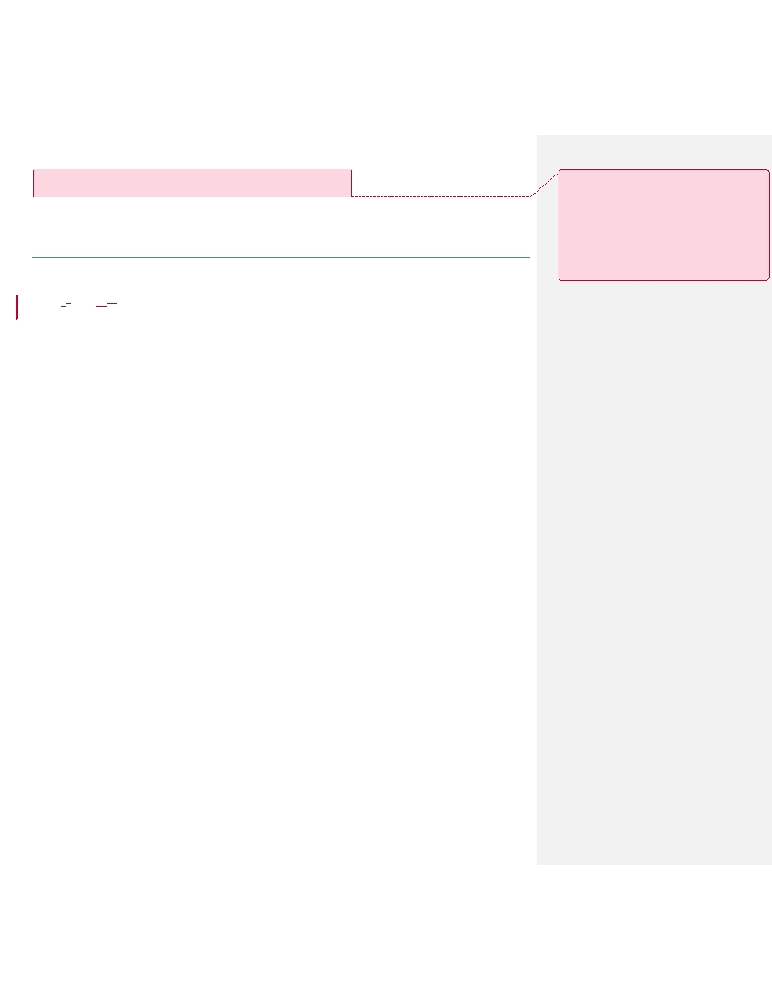
Commented [HMv(1]: De volgende kleurcodering wordt
gehanteerd om het instemmings-/adviesrecht bij de diverse
Onderwijs- en examenregeling
artikelen weer te geven:
Rood = URaad heeft instemmingsrecht (verplicht voorgeschreven)
Bruin = URaad heeft adviesrecht (verplicht voorgeschreven)
Masteropleidingen
Groen = FR instemmingsrecht, OC adviesrecht
Blauw = OC instemmingsrecht (FR geen instemmingsrecht)
Zwart = OC adviesrecht (FR geen instemmingsrecht)
Graduate School of Natural Sciences
Andere kleuren zijn het gevolg van de ‘track changes’ en laten
wijzigingen zien. Deze kleuren zijn te verbergen door de ‘markup’ bij
2021-2022
track changes uit te zetten.
Versie 21.0, dd 1703 december 2020

2
OER Graduate School of Natural Sciences 2021-2022
Inhoud
PARAGRAAF 1 – ALGEMENE BEPALINGEN........................................................................................................................................4
ART . 1.1 – TOEPASSELIJKHEID VAN DE REGELING ...............................................................................................................................................4
ART . 1.2 – BEGRIPSBEPALINGEN ....................................................................................................................................................................4
PARAGRAAF 2 – TOELATING ............................................................................................................................................................6
ART . 2.1 – TOELATINGSEISEN OPLEIDING .........................................................................................................................................................6
ART . 2.2 – TAAL .........................................................................................................................................................................................6
Engelse taal.......................................................................................................................................................................................6
ART . 2.3 – TOELATINGSPROCEDURE ...............................................................................................................................................................7
ART . 2.4 – VOORWAARDELIJKE TOELATINGSBESCHIKKING : PREMASTER ..................................................................................................................7
ART . 2.5 – HARDHEIDSCLAUSULE TOELATING ....................................................................................................................................................8
PARAGRAAF 3 – INHOUD EN INRICHTING VAN DE OPLEIDING .........................................................................................................9
ART . 3.1 – DOEL VAN DE OPLEIDING ...............................................................................................................................................................9
ART . 3.2 – VORM VAN DE OPLEIDING ............................................................................................................................................................10
ART . 3.3 – TAAL WAARIN DE OPLEIDING WORDT VERZORGD ..............................................................................................................................10
ART . 3.4 – STUDIELAST ..............................................................................................................................................................................10
ART . 3.5 – STARTMOMENTEN .....................................................................................................................................................................10
ART . 3.6 – SAMENSTELLING PROGRAMMA ’ S ...................................................................................................................................................10
ART . 3.7 – CURSUSSEN ELDERS EN ONDERDELEN BEHAALD VOOR TOELATING ........................................................................................................11
ART . 3.8 – ONDERWIJS GEVOLGD AAN EEN BUITENLANDSE UNIVERSITEIT ..............................................................................................................12
ART . 3.9 – HONOURSPROGRAMMA ’ S ...........................................................................................................................................................12
ART . 3.10 – FEITELIJKE VORMGEVING ONDERWIJS ...........................................................................................................................................13
PARAGRAAF 4 – ONDERWIJS .........................................................................................................................................................14
ART . 4.1 – CURSUS ...................................................................................................................................................................................14
ART . 4.2 – INGANGSEISEN CURSUSSEN ..........................................................................................................................................................14
ART . 4.3 – INSCHRIJVING VOOR CURSUSSEN ...................................................................................................................................................14
ART . 4.4 – AANWEZIGHEIDS - EN INSPANNINGSVERPLICHTING ............................................................................................................................14
ART . 4.5 – EVALUATIE KWALITEIT ONDERWIJS .................................................................................................................................................15
PARAGRAAF 5 – TOETSING ............................................................................................................................................................16
ART . 5.1 – ALGEMEEN ...............................................................................................................................................................................16
ART . 5.2 – EXAMENCOMMISSIE ...................................................................................................................................................................16
ART . 5.3 – TOETSING STAGE OF ONDERZOEKSOPDRACHT ..................................................................................................................................16
ART . 5.4 – CIJFERS ....................................................................................................................................................................................17
ART . 5.5 – REPARATIE : AANVULLENDE OF VERVANGENDE TOETS .........................................................................................................................17
ART . 5.6 – TOETSVORM .............................................................................................................................................................................17
ART . 5.7 – MONDELINGE TOETSEN ...............................................................................................................................................................18
ART . 5.8 – TOETSVOORZIENING BIJZONDERE GEVALLEN ....................................................................................................................................18
ART . 5.9 – TERMIJN BEOORDELING ...............................................................................................................................................................18
ART . 5.10 – GELDIGHEIDSDUUR ...................................................................................................................................................................18
ART . 5.11 – INZAGERECHT .........................................................................................................................................................................19
ART . 5.12 – BEWAARTERMIJN TOETSEN ........................................................................................................................................................19
ART . 5.13 – VRIJSTELLING EN CREDIT TRANSFER ..............................................................................................................................................19
ART . 5.14 – FRAUDE EN PLAGIAAT ...............................................................................................................................................................20
PARAGRAAF 6 – EXAMEN ..............................................................................................................................................................23

PARAGRAAF 1 – ALGEMENE BEPALINGEN
3
ART . 6.1 – EXAMEN ..................................................................................................................................................................................23
ART . 6.2 – JUDICIUM CUM LAUDE ................................................................................................................................................................23
ART . 6.3 – GRAAD ....................................................................................................................................................................................24
ART . 6.4 – GETUIGSCHRIFT EN I NTERNATIONAAL D IPLOMA S UPPLEMENT .............................................................................................................24
ART . 6.5 – HONOURS ................................................................................................................................................................................24
ART . 6.6 – G RADING T ABLES ......................................................................................................................................................................24
PARAGRAAF 7 – STUDIEBEGELEIDING............................................................................................................................................25
ART . 7.1 – STUDIEVOORTGANGSADMINISTRATIE .............................................................................................................................................25
ART . 7.2 – STUDIEBEGELEIDING ...................................................................................................................................................................25
ART . 7.3 – HANDICAP EN CHRONISCHE ZIEKTE .................................................................................................................................................25
PARAGRAAF 8 – OVERGANGS- EN SLOTBEPALINGEN .....................................................................................................................26
ART . 8.1 – VANGNETREGELING ....................................................................................................................................................................26
ART . 8.2 – WIJZIGING VAN DE OER..............................................................................................................................................................26
ART . 8.3 – BEKENDMAKING ........................................................................................................................................................................26
ART . 8.4 – INWERKINGTREDING ...................................................................................................................................................................26
BIJLAGE 1: PROTOCOL UITLOOP AFSTUDEREN ..............................................................................................................................27
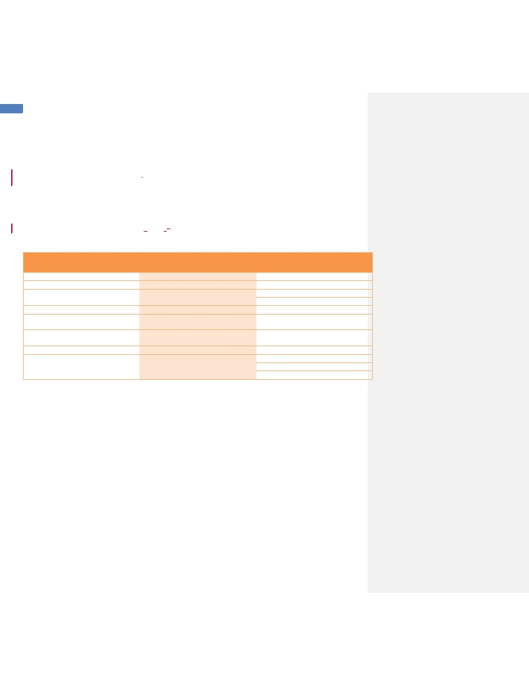
4
OER Graduate School of Natural Sciences 2021-2022
In de Onderwijs- en Examenregeling zijn de opleidingsspecifieke rechten en plichten opgenomen van studenten
enerzijds en de Universiteit Utrecht anderzijds. In het (algemene universitaire) Studentenstatuut staan de rechten en
plichten die voor alle studenten gelden.
Deze regeling is vastgesteld door de decaan van de Faculteit Bètawetenschappen met instemming van de faculteitsraad
en de opleidingscommissie d.d. xx xx 2021.
PARAGRAAF 1 – ALGEMENE BEPALINGEN
art. 1.1 – toepasselijkheid van de regeling
Deze regeling geldt voor het studiejaar 20210-20221 en is van toepassing op het onderwijs, de toetsen en het examen
van de masteropleidingen en –programma’s:
Opleiding (volgens URO)
Opleiding - Engelse benaming
Programma
Chemische Wetenschappen
Chemical Sciences
Nanomaterials Science
Artificial Intelligence
Artificial Intelligence
Artificial Intelligence
Informatica
Computer Science
Game and Media Technology
Computing Science
Applied Data Science
Applied Data Science
Applied Data Science
Geschiedenis en Wijsbegeerte van de
History and Philosophy of Science
History and Philosophy of Science
Wiskunde en Natuurwetenschappen
Information Science
Information Science
Business Informatics
Human Computer Interaction
Mathematische Wetenschappen
Mathematical Sciences
Mathematical Sciences
Physics
Physics
Experimental Physics
Climate Physics
Theoretical Physics
hierna te noemen: de opleiding en het programma, en op alle studenten die voor de opleiding staan ingeschreven en op
degenen die verzoeken om toegelaten te worden tot de opleiding. De opleidingen worden verzorgd door de Graduate
School of Natural Sciences van de Faculteit Bètawetenschappen, hierna te noemen: de School en de Faculteit.
art. 1.2 – begripsbepalingen
In deze regeling wordt verstaan onder:
a. de wet: de Wet op het hoger onderwijs en wetenschappelijk onderzoek;
b. opleiding: de masteropleiding genoemd in art. 1.1 van deze regeling. Een opleiding kan bestaan uit meerdere
masterprogramma's.
c. student: degene die is ingeschreven aan de universiteit voor het volgen van het onderwijs en/of het afleggen van de
toetsen en het examen van de opleiding;
d. studiepunt: eenheid gelijk aan één EC (één studiepunt in het European Credit Transfer System); een studiepunt staat
gelijk aan 28 uur studielast;
e. gedragscode taal: de op grond van art. 7.2 sub c van de wet door het College van Bestuur vastgestelde gedragsregels
ten aanzien van het verzorgen van het onderwijs en de toetsen in een andere taal dan het Nederlands;
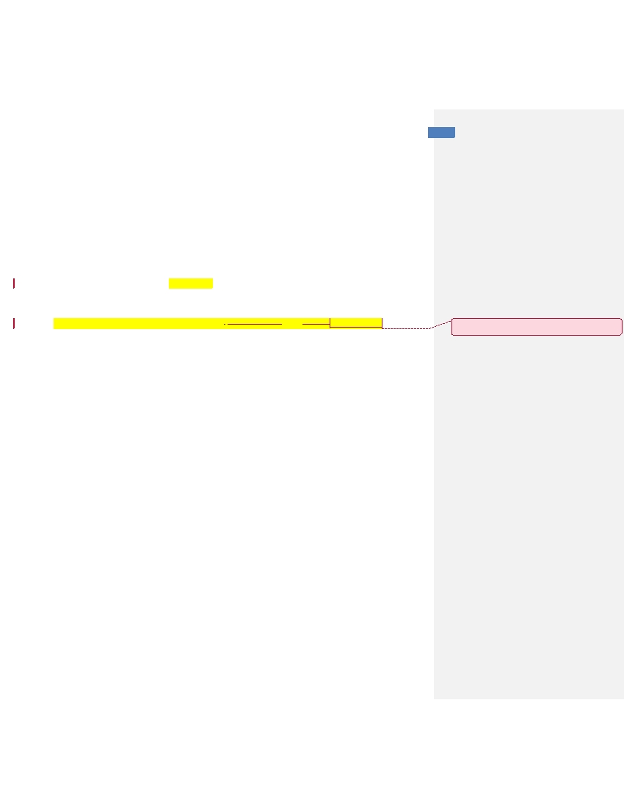
PARAGRAAF 2 – TOELATING
5
f.
programma: een samenhangend geheel van onderwijseenheden binnen een opleiding, zoals beschreven in art. 3.6
van deze regeling;
g. pakket: de individuele, studentspecifieke invulling van het programma in termen van onderdelen;
h. onderdeel: een onderwijseenheid van de opleiding, opgenomen in de Universitaire Onderwijscatalogus;
i.
cursus: het geheel van onderwijs en toetsing van een onderdeel;
j.
toets: tentamen als bedoeld in art. 7.10 van de wet;
k. examen: het afsluitend masterexamen van de opleiding dat met goed gevolg is afgelegd als aan alle verplichtingen
van de gehele masteropleiding is voldaan;
l.
Universitaire Onderwijscatalogus: het onder verantwoordelijkheid van het College van Bestuur gehouden register
van de binnen de universiteit verzorgde cursussen;
m. contacturen. Onder contacturen wordt verstaan:
- onderwijsuren waarbij een docent fysiek/online aanwezig is, zoals hoor- en werkcolleges, studiebegeleiding,
stagebegeleiding en toetsen en ook studieloopbaanbegeleiding voor zover de opleiding die voor alle studenten
heeft geprogrammeerd;
- overige gestructureerde uren die door de opleiding zijn geprogrammeerd en die worden gekenmerkt door
online of fysiek contact tussen studenten onderling, virtueel of reëel en/of virtueel online of fysiek contact met
Commented [HG(2]: Advice BoS 19112020 ‘do not use ‘virtual’
docenten.
but ‘online’.
n. contract onderwijsvoorzieningen: het door de student met een handicap of chronische ziekte en een functionaris
namens de opleiding samen met het bureau onderwijszaken afgesloten contract waarin is vastgelegd op welke
noodzakelijke en redelijke voorzieningen de student recht heeft;
o. Internationaal Diploma Supplement: de bijlage bij het mastergetuigschrift waarin een toelichting is opgenomen
m.b.t. de aard en de inhoud van de opleiding (mede in internationale context);
p. Opleidingsdirecteur: door de decaan benoemd directeur van de opleiding, die eindverantwoordelijk is voor de
organisatie, inhoud en kwaliteit van het onderwijs van de opleiding.
q. Examencommissie: examencommissie van de School;
r.
Toelatingscommissie: toelatingscommissie van de School;
s.
Opleidingscommissie: opleidingscommissie van de School;
t.
Programmacoördinator: lid van de academische staf welke het betreffende programma verzorgt, die fungeert als
contactpersoon voor de student;
u. Programmaleider: door de School aangewezen lid van de academische staf welke het programma verzorgt, die
primair verantwoordelijk is voor vormgeving, uitvoering en kwaliteitszorg van het betreffende programma.
De overige begrippen hebben de betekenis die de wet daaraan toekent.
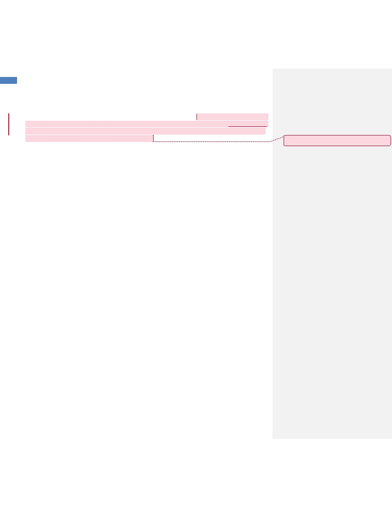
6
OER Graduate School of Natural Sciences 2021-2022
PARAGRAAF 2 – TOELATING
art. 2.1 – toelatingseisen opleiding
1. Toelaatbaar tot de opleiding is de bezitter van een Nederlands of een buitenlands diploma dat equivalent is aan een
Nederlands bachelordiploma, die aantoont te beschikken over de kennis, inzicht en vaardigheden op het niveau van
een universitair bachelordiploma en die aantoont te beschikken over de specifieke kennis, inzicht en vaardigheden
zoals gespecificeerd per programma in de programmabijlage.
Commented [HG(3]: Added based on Modelmaster OER 2021-
2022 change. BoS agreed with Modelmaster OER text on 03112020
2. Selectie van studenten geschiedt op basis van kerncompetenties (zie OER Annex) met betrekking tot:
a. eerdere academische prestaties in (een) relevante vakgebied(en);
b. relevante vaardigheden;
c. beheersing van de in het programma gehanteerde taal of talen.
Aan de hand hiervan wordt bezien of betrokkene in staat is om het masterprogramma met goed gevolg af te
ronden binnen de nominale duur.
3. De toelatingseisen zijn helder en transparant geformuleerd zodat kandidaten vooraf op de hoogte zijn aan welke
eisen zij moeten voldoen om toegelaten te worden tot het programma.
art. 2.2 – taal
Engelse taal
1. Inschrijving voor de opleiding is pas mogelijk nadat is aangetoond dat voldaan is aan de eis van voldoende
beheersing van de Engelse taal.
2. Deficiënties in de vooropleiding in Engels worden voor aanvang van de opleiding weggewerkt door het succesvol
afleggen van één van de volgende toetsen:
a. IELTS (International English Language Testing System), academic module. De minimum vereiste IELTS score
(overall band) is: 6,5 met ten minste 6,0 voor het onderdeel ‘schrijven’.
b. TOEFL (Test Of English as a Foreign Language). De minimum vereiste TOEFL score is 93 voor de internettest.
c.
Cambridge EFL (English as a Foreign Language) Examinations, met één van de volgende certificaten:
- Cambridge Certificate in Advanced English; minimum score: B;
- Cambridge Certificate of Proficiency in English; minimum score: C;
- Cambridge English Advanced (CAE); minimum score: 176 total, 169 writing;
- Cambridge English Proficiency (CPE); minimum score: 180 total, 169 writing;
3. Aan de eis van voldoende beheersing van de Engelse taal worden geacht te voldoen:
a. De bezitter van een in Nederland behaald universitair of HBO-bachelordiploma;
b. De bezitter van een bachelordiploma van een Engelstalige opleiding;
c.
Een kandidaat met Engels als moedertaal.
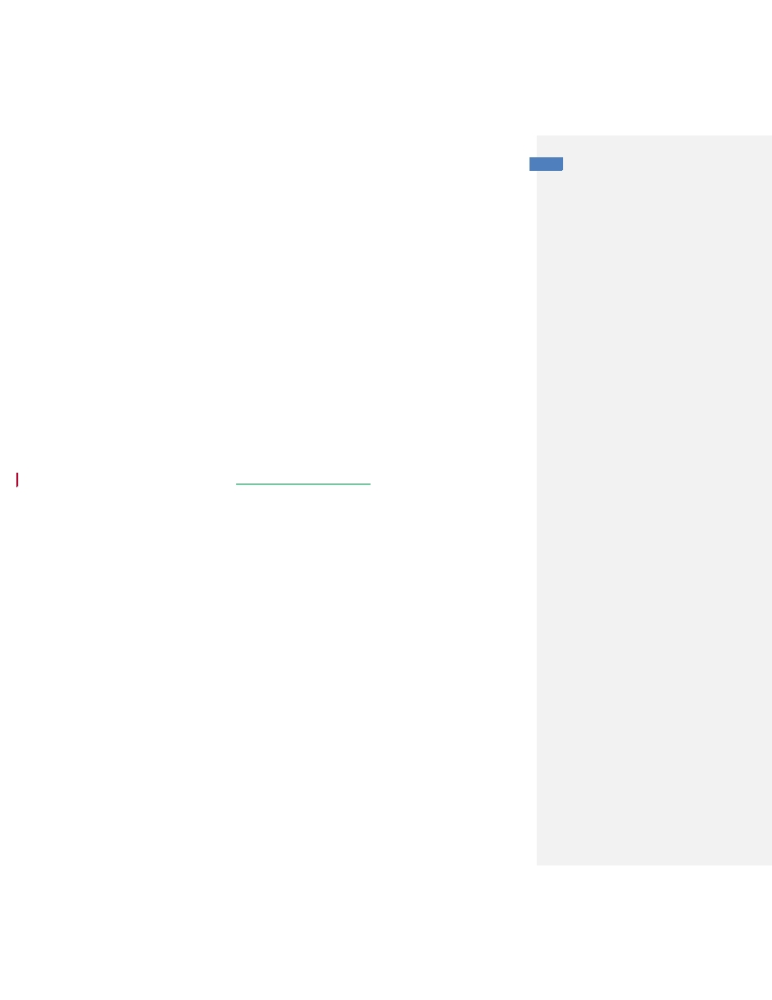
PARAGRAAF 2 – TOELATING
7
art. 2.3 – toelatingsprocedure
1. De toelating tot de opleiding en de onderscheidene programma’s is opgedragen aan de toelatingscommissie.
2. Met het oog op de toelating tot de opleiding stelt de toelatingscommissie een toelatingsonderzoek in naar de
kennis, het inzicht en de vaardigheden van de kandidaat. In aanvulling op schriftelijke bewijzen van de gevolgde
opleiding(en) kan de commissie bepaalde kennis, inzicht en vaardigheden laten toetsen door deskundigen in of
buiten de universiteit.
3. Met het oog op de toelating tot een programma onderzoekt de toelatingscommissie of de kandidaat voldoet dan
wel tijdig zal voldoen aan de daarvoor in art. 2.1 gestelde voorwaarden. De commissie oordeelt bij haar onderzoek
over de in art. 2.1, tweede lid genoemde kerncompetenties van de kandidaat m.b.t. het desbetreffende programma,
alsmede de kennis van de kandidaat van de taal waarin het onderwijs van het programma wordt verzorgd. Op basis
hiervan komt de toelatingscommissie tot een oordeel over de geschiktheid van de kandidaat om met voldoende
inspanning binnen de daarvoor gestelde tijd de eindkwalificaties van het masterprogramma te kunnen halen.
4. De toelatingscommissie beslist binnen een termijn van 20 werkdagen vanaf het moment dat het dossier compleet
binnen is. De toelating wordt verleend onder de voorwaarde dat de kandidaat uiterlijk op de betreffende
begindatum van de opleiding zal voldoen aan de in art. 2.1 bedoelde eisen t.a.v. kennis en vaardigheden, zoals die
blijken uit getuigschriften van door hem gevolgde opleidingen.
5. Een verzoek te worden toegelaten tot de opleiding en een bepaald programma wordt voor de op de
studiekiezerswebsite (www.uu.nl/masters of www.uu.nl/internationalmasters) vermelde relevante deadline
ingediend bij de toelatingscommissie. Verzoeken ingediend na deze deadlines worden niet in behandeling genomen.
In de beslissing om het verzoek niet in behandeling te nemen wordt gewezen op de beroepsmogelijkheid bij het
College van Beroep voor de Examens.
6. In afwijking van het bepaalde in het vijfde lid kan de toelatingscommissie in bijzondere gevallen een na deze
deadlines ingediend verzoek in behandeling nemen.
7. De kandidaat ontvangt een schriftelijk bewijsstuk van de toelatings- c.q. afwijzingsbeslissing tot de opleiding en een
bepaald programma. Hierin wordt gewezen op de beroepsmogelijkheid bij het College van Beroep voor de Examens.
art. 2.4 – voorwaardelijke toelatingsbeschikking: premaster
1. Degenen die niet aan de toelatingseisen genoemd in art. 2.1 voldoen, kunnen hieraan in voorkomende gevallen, ter
beoordeling door de toelatingscommissie, voldoen door een op het masterprogramma toegesneden
premastertraject van de Universiteit Utrecht met goed gevolg af te ronden, zoals aangegeven in de voorwaardelijke
toelatingsbeschikking van de toelatingscommissie. Het premastertraject heeft een maximale omvang van 30
studiepunten. De toelatingscommissie beslist na haar toelatingsonderzoek over omvang en inhoud van een
eventueel premasterprogramma.
2. Het premastertraject moet binnen 12 maanden worden voltooid. Na verloop van deze periode of bij kwalitatief of
kwantitatief onvoldoende deelname kan de toelatingscommissie de student uitsluiten van verdere deelname aan de
premaster.
3. Op de voorwaardelijke toelatingsbeschikking is aangegeven dat de kandidaat wordt toegelaten tot het
masterprogramma indien:
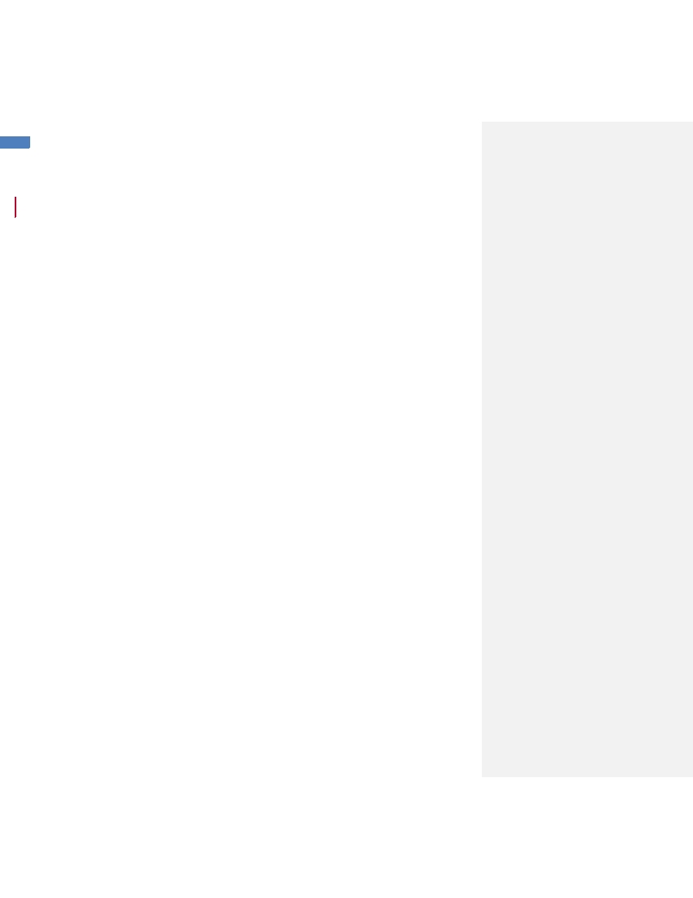
8
OER Graduate School of Natural Sciences 2021-2022
a. het aangegeven premastertraject met de daarbij beschreven onderdelen en studielast uitgedrukt in
studiepunten met goed gevolg is afgelegd
b. de student dit binnen de aangegeven periode met goed gevolg afrondt.
4. De kandidaat ontvangt een schriftelijk bewijsstuk van de voorwaardelijke toelatingsbeschikking. Hierin wordt
gewezen op de beroepsmogelijkheid bij het College van beroep voor de examens.
5. Na het voldoen aan de voorwaarden genoemd in het derde lid onder a en b, wordt de voorwaardelijke
toelatingsbeschikking omgezet in een definitieve toelatingsbeschikking.
6. Het premastertraject bedoeld in het eerste lid staat uitsluitend open voor kandidaten die: (1) de nationaliteit
bezitten van een land dat tot de EU/EER behoort of Zwitserland, dan wel niet deze nationaliteit bezitten maar wel
een verblijfsvergunning hebben die aanspraak geeft op wettelijk collegegeld, en (2) die hun vooropleiding in
Nederland hebben afgerond.
7. De toelatingscommissie kan in bijzondere gevallen afwijken van de in het zesde lid genoemde eisen. Er wordt in
ieder geval afgeweken voor vluchtelingen met een verblijfsstatus en vluchtelingen met een W-document, die asiel
hebben aangevraagd en nog geen (definitieve) beslissing op hun aanvraag hebben ontvangen. Afwijken is niet
mogelijk indien de kandidaat visumbemiddeling nodig heeft van de Universiteit Utrecht waarbij de universiteit als
referent optreedt.
art. 2.5 – hardheidsclausule toelating
1.
a. In bijzondere gevallen, wanneer de kandidaat aan alle hieronder genoemde voorwaarden voldoet, kan de
toelatingscommissie de kandidaat op diens verzoek voor een half jaar toelaten tot een programma, indien
i)
de verplichte onderdelen van de major zijn behaald en de student overigens van een relevante
bacheloropleiding nog slechts onderdelen met een gezamenlijke studielast van ten hoogste 15 studiepunten
moet behalen, en
ii) de gerechtvaardigde verwachting bestaat dat de student de bacheloropleiding in zeer korte tijd, doch
maximaal binnen een half jaar vanaf het moment dat student voorlopig is toegelaten tot de masteropleiding
zal kunnen afronden, en
iii) de student ten gevolge van overmacht onvoldoende heeft kunnen doorstromen en er een onevenredige
studievertraging zou optreden indien de student niet alvast aan de masteropleiding kan beginnen.
b. Na het behalen van het afsluitend examen van de betreffende bacheloropleiding wordt de toelating voor een
half jaar omgezet in een definitieve toelating.
c.
Indien de student niet binnen 6 maanden na aanvang van de masteropleiding het afsluitend examen van
betreffende bacheloropleiding heeft behaald, wordt de student uitgesloten van verdere deelname aan de
masteropleiding totdat het bachelorexamen is behaald.
2.
a. De toelatingscommissie kan besluiten de kandidaat die nog niet in het bezit is gesteld van een bewijsstuk van de
(afgeronde) vooropleiding als bedoeld in artikel 2.1, op diens verzoek voor twee weken toe te laten tot een
programma.
b. Indien de kandidaat niet binnen twee weken na aanvang van de masteropleiding het genoemde bewijsstuk kan
overleggen, wordt de student uitgesloten van verdere deelname aan de masteropleiding totdat aan alle
toelatingseisen is voldaan.

PARAGRAAF 3 – INHOUD EN INRICHTING VAN DE OPLEIDING
9
PARAGRAAF 3 – INHOUD EN INRICHTING VAN DE OPLEIDING
art. 3.1 – doel van de opleiding
1. Met de opleiding wordt beoogd:
- gespecialiseerde kennis, vaardigheid en inzicht op een gebied van Natural Sciences te verwerven, en de
eindkwalificaties genoemd in het tweede lid te bereiken,
- het voorbereiden op de beroepsuitoefening in toegepast en fundamenteel onderzoek in de maatschappij dan
wel op het gebied van de Natural Sciences, en
- het voorbereiden op de opleiding tot onderzoeker op het gebied van de Natural Sciences.
2. Eindtermen van de opleiding: de afgestudeerde:
Kennis en inzicht
1. Is in staat om met de kennis van ten minste één van de deelgebieden van de Natural Sciences een wezenlijke
bijdrage te leveren aan het ontwikkelen en/of toepassen van wetenschappelijke concepten en methodes, veelal in
onderzoeksverband.
2. Is in staat de belangrijke recente ontwikkelingen binnen ten minste één van de deelgebieden de Natural Sciences
te overzien en de implicaties van die ontwikkelingen voor vakgebied en samenleving aan te geven.
3. Is in staat om gespecialiseerde vakliteratuur op ten minste één van de deelgebieden van de Natural Sciences
adequaat te hanteren en te interpreteren.
4. Heeft inzicht in de rol die integriteitsdilemma’s in het vakgebied kunnen spelen.
Toepassen kennis en inzicht
5. Is in staat een probleem uit het domein van de Natural Sciences te vertalen in een voor wetenschapsontwikkeling,
productontwikkeling of educatie relevante en geschikte onderzoeksvraag.
6. Is in staat bij deze onderzoeksvraag een passend onderzoeksontwerp te formuleren conform de daarbij vereiste
methodologische en wetenschappelijke standaard.
7. Is in staat dit onderzoek op eigen kracht en met de vereiste zorgvuldigheid en ethische verantwoordelijkheid uit te
voeren en de daarbij empirisch verkregen data of andere uitkomsten op juiste wijze te verwerken, te analyseren, te
interpreteren en te evalueren.
Oordeelsvorming
8. Is in staat de uitkomsten van empirisch of theoretisch onderzoek te bediscussiëren en te verbinden met de
huidige wetenschappelijke stand van zaken en literatuur.
9. Is in staat de relevantie aan te geven van dit onderzoek voor de oplossing van vragen en problemen op het gebied
van de Natural Sciences, waar mogelijk ook vanuit een maatschappelijk standpunt.
10. Is in staat kritisch te reflecteren op de eigen inspanningen als onderzoeker op het gebied van de Natural Sciences
vanuit een maatschappelijk perspectief.
Communicatie
11. Is in staat de resultaten van onderzoek zowel schriftelijk als mondeling duidelijk over te brengen zowel voor een
publiek van specialisten als voor niet-vakdeskundigen, ook in een internationale context.
12. Is in staat effectief te functioneren in een mogelijk multidisciplinair samengesteld onderzoeksteam.
Leervaardigheden
13. Bezit de vaardigheid om het eigen leer- en ontwikkelproces tijdens de studie te evalueren en zichzelf zo nodig te
motiveren en ‘bij te sturen’.
14. Heeft zich een effectieve en resultaatgerichte werkwijze eigen gemaakt die zich in staat stelt om zelfstandig te
functioneren op een competitieve arbeidsmarkt.
15. Heeft de kwalificatie om een promotieopleiding te verkrijgen, dan wel een functie op de arbeidsmarkt.
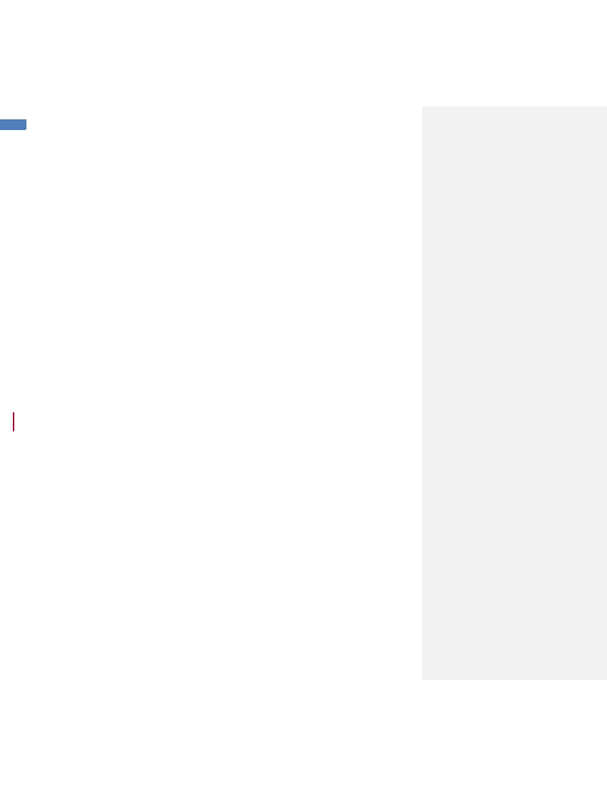
10
OER Graduate School of Natural Sciences 2021-2022
16. Heeft een goed beeld van de beroepsmogelijkheden en van de bekwaamheden die nodig zijn om een succesvolle
start te maken op de arbeidsmarkt.
Van bovenstaande, schoolbrede eindtermen is een per programma specifieke invulling gemaakt, die in de
betreffende bijlage is opgenomen.
art. 3.2 – vorm van de opleiding
De programma’s worden voltijds verzorgd. 0F
art. 3.3 – taal waarin de opleiding wordt verzorgd
In de masterprogramma’s is gekozen om deze volledig in het Engels uit te voeren. De keuze is gebaseerd op de
volgende argumenten:
1. Vanwege een internationaler wordende economie wordt het steeds belangrijker dat studenten worden toegerust
met interculturele en internationale competenties, waaronder taalvaardigheid, om een zo goed mogelijke
(start)positie te hebben op de arbeidsmarkt. Daarnaast draagt de instroom van internationaal talent bij aan
kwaliteitsverhoging van het onderwijs en van het creëren van een diverse en internationale studentenpopulatie. In
internationale context is het Engels dan de enige realistische 'lingua franca'.
2. De masterprogramma’s zijn gericht op het opleiden van onderzoekers. Goed wetenschappelijk onderzoek wordt
uitgevoerd in een internationale context en is dus per definitie internationaal, en de School stimuleert
buitenlandervaring bij alle studenten. Om de kwaliteit van het onderzoek op hoog niveau te houden, zijn
internationale netwerken en voldoende internationale wetenschappelijke staf van groot belang. Ook hier geldt dat
het Engels dan de enige realistische keuze is.
3. Op de programma’s is de Gedragscode Taal van de Universiteit Utrecht (zie
https://students.uu.nl/sites/default/files/uu-algemeen-gedragscode-taal.pdf) van toepassing.
art. 3.4 – studielast
De eenjarige programma’s hebben een studielast van 60 studiepunten. De tweejarige programma’s hebben een
studielast van 120 studiepunten.
art. 3.5 – startmomenten
De startmomenten van de programma’s zijn 1 september en 1 februari. In uitzondering hierop starten de programma’s
History and Philosophy of Science en Applied Data Science alleen op 1 september.
art. 3.6 – samenstelling programma’s
1. Elk programma bevat minimaal de volgende componenten:
- een aantal verplichte onderdelen en/of aan het programma gebonden keuzeonderdelen;
- een aantal keuzeonderdelen;
- een verplichte onderzoeksopdracht;
- een introductieperiode en een onderdeel op het gebied van wetenschappelijke integriteit
2. In het geval de verplichte onderzoeksopdracht groter is dan 30 studiepunten wordt deze administratief gesplitst in
twee aparte onderdelen.
3. Tweejarige programma’s bieden de mogelijkheid om een gedeelte van het programma in te vullen als profiel. Een
profiel is een samenhangend, thematisch geheel van onderdelen, ter grootte van 30 studiepunten. De school biedt
de profielen Applied Data Science, Complex Systems en het Educational Profile aan. Deze worden in aparte bijlagen

PARAGRAAF 3 – INHOUD EN INRICHTING VAN DE OPLEIDING
11
omschreven. In de programmabijlagen wordt omschreven welke profielen gekozen kunnen worden binnen het
betreffende programma en welke gevolgen dat voor de samenstelling van het pakket heeft.
4. Een profiel kan bij een juiste pakketkeuze worden afgerond binnen de reguliere programma-omvang van 120
studiepunten. Een student kan binnen de reguliere omvang slechts één profiel kiezen. Het gelijktijdig kiezen van een
profiel en een honoursprogramma kan alleen onder goedkeuring van het pakket door de examencommissie, die
erop toeziet dat de eindtermen van het reguliere curriculum, het profiel en het honoursprogramma gehaald
worden. Daarbij is niet gegarandeerd dat het pakket binnen het reguliere aantal studiepunten kan worden afgerond.
5. Binnen de keuzeruimte van de programma’s bestaat de mogelijkheid om ten minste 7,5 EC te besteden aan
onderdelen ter verbreding van het programma, al dan niet op het vakgebied van het programma. Deze mogelijkheid
vervalt indien de student voor een profiel kiest. Meer uitgebreide informatie over inhoud en opbouw van elk
programma en mogelijke profielen is te vinden in de programmabijlage bij deze regeling.
6. In de universitaire onderwijscatalogus worden de inhoud en de onderwijsvorm van de door de Universiteit Utrecht
aangeboden onderdelen van de onderscheiden programma’s nader omschreven onder vermelding van de
voorkennis die gewenst is om aan het desbetreffende onderdeel met goed gevolg te kunnen deelnemen.
7. De toelatingscommissie kan voor een individuele student een beperkt aantal onderdelen verplichtend opleggen ter
compensatie van deficiënties uit de vooropleiding. De studielast van deze onderdelen gaat ten koste van de vrije
keuzeruimte. Onderdelen in het programma die expliciet gegeven worden om deficiënties op te vangen kunnen -
indien er een overlap bestaat met de gekozen invulling van de opleiding op grond waarvan toelating tot het
programma is verkregen- geen deel uitmaken van het pakket van de student.
8. Onderdelen die reeds opgevoerd zijn bij het getuigschrift van een eerder afgeronde Bachelor- of andere opleiding
kunnen niet nogmaals opgevoerd worden.
9. De programmaleider kan de student verplichten zijn pakket ter voorlopige goedkeuring voor te leggen aan de
programmacoördinator of programmaleider. Een definitieve goedkeuring kan alleen door de examencommissie
worden gegeven.
art. 3.7 – cursussen elders en onderdelen behaald voor toelating
1. Voor cursussen van andere Nederlandse universiteiten die qua inhoud en niveau zijn goedgekeurd door de
examencommissie worden de studiepunten overgenomen. De examencommissie onthoudt goedkeuring als er naar
haar oordeel sprake is van inhoudelijke dubbeling met betrekking tot eerder door de student afgelegde cursussen.
Indien cursussen inhoudelijk geheel of gedeeltelijk overlappen kan de examencommissie de inbreng van deze
cursussen voor het examen beperken door aftrek van studiepunten naar rato van de overlap.
2. Voorwaarde voor het behalen van het getuigschrift van het masterexamen van de opleiding is dat ten minste de
helft van de studiepunten van het pakket is behaald via onderdelen verzorgd door de Universiteit Utrecht.
3. Onderdelen die tijdens de opleiding elders behaald worden, kunnen uitsluitend met toestemming van de
Examencommissie worden ingebracht in het pakket van de student.
4. Voor onderdelen die voorafgaand aan de start van en de toelating tot de masteropleiding zijn behaald aan een
instelling voor hoger onderwijs, kan slechts op grond van art. 5.13 vrijstelling worden verleend; artikel 5.13, lid 2
blijft hierbij onverminderd van toepassing.
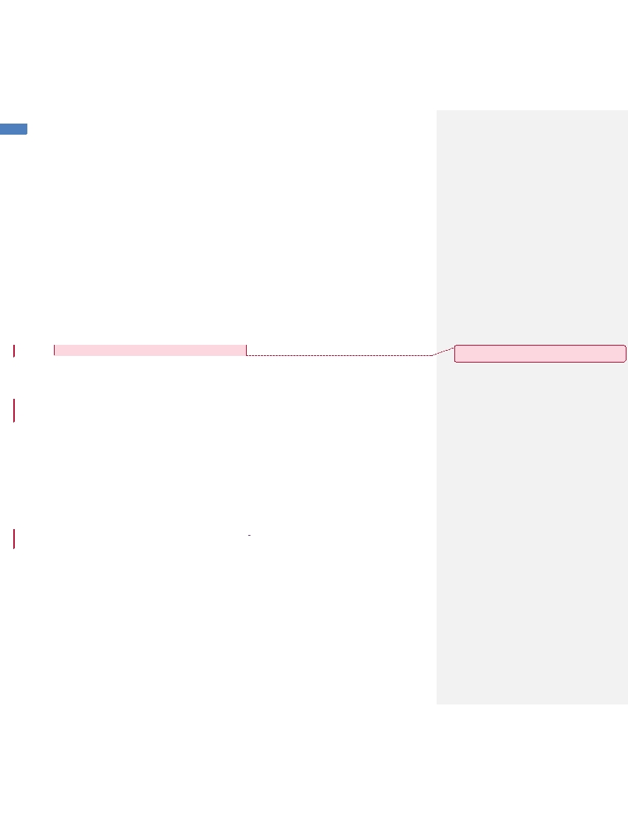
12
OER Graduate School of Natural Sciences 2021-2022
art. 3.8 – onderwijs gevolgd aan een buitenlandse universiteit
1) Voor keuze komen - onder goedkeuring van de examencommissie - cursussen in aanmerking, verzorgd door een
buitenlandse universiteit. De examencommissie bepaalt daarbij of deze cursussen voldoende academisch niveau
hebben. De examencommissie onthoudt goedkeuring als er naar haar oordeel sprake is van inhoudelijke dubbeling
met betrekking tot eerder door de student afgelegde cursussen. Indien cursussen inhoudelijk geheel of gedeeltelijk
overlappen kan de examencommissie de inbreng van deze cursussen voor het examen beperken door aftrek van
studiepunten naar rato van de overlap.
2) De opleiding publiceert op de studentensite de procedure met betrekking tot het inbrengen van buitenlandse
cursussen:
-
daarbij is aangegeven op welk moment en op welke manier studenten goedkeuring kunnen vragen voor
buitenlandse cursussen;
-
daarbij hebben studenten de mogelijkheid om op een zodanig moment goedkeuring te vragen dat zij bij aanvang
van de uitwisseling uitsluitsel hebben van de examencommissie.
3) Omzetting van studiepunten voor buitenlandse cursussen is als volgt:
a) Voor cursussen van buitenlandse universiteiten binnen de Europese Unie/Europese Economische Ruimte die
met het European Credit Transfer Systeem (ECTS) werken, qua inhoud en niveau zijn goedgekeurd door de
Commented [HG(4]: Added based on Model master OER
2021-2022
examencommissie worden de studiepunten overgenomen. In afwijking hiervan kan de examencommissie
besluiten een ander aantal studiepunten toe te kennen als vast staat dat de in het buitenland toegekende
studiepunten niet in overeenstemming zijn met de studiebelastingsuren.
b) Voor cursussen van buitenlandse universiteiten buiten de Europese Unie/Europese Economische Ruimte die niet
met het European Credit Transfer Systeem (ECTS) werken, qua inhoud en niveau zijn goedgekeurd door de
examencommissie worden de studiepunten omgezet conform de universiteitsbrede omrekentabel. Zie
www.uu.nl/credit-omrekentabel. De examencommissie kan in bijzondere gevallen hiervan afwijken als daar
gegronde redenen voor zijn.
4) Omzetting van behaalde ‘cijfers’ voor buitenlandse cursussen is als volgt:
a) Buitenlandse resultaten worden omgezet naar de alfanumerieke resultaten V/ONV (voldoende/onvoldoende);
daarnaast worden tevens de oorspronkelijke resultaten geregistreerd in OSIRIS. Voorts worden de
oorspronkelijke resultaten afgedrukt op het Internationaal Diploma Supplement, bedoeld in artikel 6.4 en wordt
daarin verwezen naar de informatie van de Nuffic over de beoordelingsschalen bij buitenlandse instellingen
(https://www.nuffic.nl/onderwerpen/onderwijssystemen).
b) De buitenlandse universiteit bepaalt waar de cesuur ligt voor een voldoende en legt vast in het transcript of de
student een voldoende heeft behaald.
c) De buitenlandse resultaten tellen niet mee voor het gemiddelde eindcijfer van de student.
d) De examencommissie bepaalt of en op welke wijze buitenlandse resultaten meewegen bij het bepalen van cum
laude.
art. 3.9 – honoursprogramma’s
1. De school kent verschillende typen honoursprogramma’s:
a.
Een honoursprogramma gebonden aan een bepaald masterprogramma, met een totale studielast van
120 studiepunten of meer: het Utrecht Geometry Centre Honours Programme .
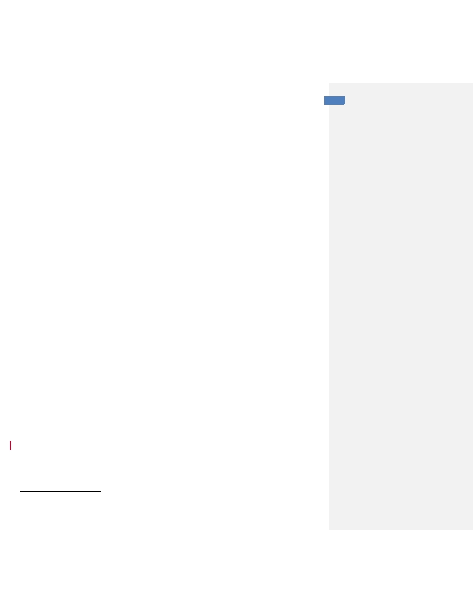
PARAGRAAF 3 – INHOUD EN INRICHTING VAN DE OPLEIDING
13
Dit type honoursprogramma wordt gekenmerkt door een verdieping binnen het kader van het
vakgebied van het betreffende masterprogramma en is dan ook alleen toegankelijk voor studenten uit
dat masterprogramma. De samenstelling en ingangseisen van dit honoursprogramma zijn vermeld in de
betreffende bijlagen.
b.
Verbredende of verdiepende honoursprogramma’s, al dan niet met een totale studielast van meer dan
120 studiepunten, toegankelijk voor studenten van verschillende masterprogramma’s: Quantitative
Biology .
Studenten kunnen door deelname aan dit honoursprogramma een gedeelte van de i.h.k.v. het
honoursprogramma behaalde studiepunten laten bijdragen aan de vereisten van hun eigen
masterprogramma. De nadere uitwerking hiervan, alsmede de samenstelling en ingangseisen van het
honoursprogramma zijn vermeld in de betreffende bijlage.
c.
Twin programma’s. Dit type honoursprogramma wordt gekenmerkt door het gelijktijdig door de student
volgen van twee programma’s van verschillende opleidingen. De student moet dan ook bij beide
opleidingen, alsmede het honoursprogramma zelf, zijn toegelaten en ingeschreven. In afwijking van de
reguliere masterprogramma’s heeft het research project een minimale omvang van 60 studiepunten,
zodanig dat het minimale aantal studiepunten dat behaald moet worden om het honoursprogramma af
te ronden ten minste 180 is. Het honoursprogramma is voltooid wanneer door de student aan beide
sets van eindtermen is voldaan. De student krijgt dan ook twee masterdiploma’s uitgereikt. De totale
studielast (van nominaal 240 studiepunten) kan worden verminderd door gebruik te maken van de
vrijstellingsregel voor het research project (art. 5.13 lid 5), en de algemene vrijstellingsregel (art. 5.13 lid
1 en 2). De algemene vrijstellingsregel maakt dat de student in ieder van zijn masterprogramma’s
maximaal 15 studiepunten vrijstelling kan krijgen op grond van vakken gevolgd in het andere
masterprogramma.
2. Alle honoursprogramma’s zijn selectief; de selectieprocedure wordt gepubliceerd op students.uu.nl 1 . Tenzij anders
vermeld in de bijlage bestaat de selectiecommissie van een twinprogramma uit programmaleiders van de twee
betrokken programma’s. Bij onvoldoende voortgang van de student kan een eerdere toelating tot het
honoursprogramma weer beëindigd worden.
3. Studenten kunnen ook deelnemen aan UU-brede masterhonoursprogramma’s zoals gepubliceerd op
students.uu.nl/onderwijs/honours.
art. 3.10 – feitelijke vormgeving onderwijs
1. Het gemiddeld aantal contacturen voor een programma wordt vermeld in de betreffende bijlage.
2. De faculteit draagt zorg dat voor alle door de Universiteit Utrecht verzorgde cursussen informatie in de Universitaire
Onderwijscatalogus tijdig beschikbaar is voor de student m.b.t.:
a. de leerdoelen;
b. de roosters;
c. de programmering van de contacturen;
d. waar en wanneer de toetsen en aanvullende toetsen van de cursussen plaatsvinden.
In het geval van individuele begeleiding van onderzoeksprojecten van 30 studiepunten of meer wordt de
begeleidingsvorm, waaronder het aantal contacturen, voor aanvang van het project schriftelijk vastgelegd. De student
kan de roosters van het door de Universiteit Utrecht verzorgde onderwijs waarvoor de student staat ingeschreven,
inzien op OSIRIS Student. Voorts kan de student in MyTimetable zien waar en wanneer de toetsen en aanvullende
toetsen van de door de Universiteit Utrecht verzorgde cursussen waarvoor de student staat ingeschreven, plaatsvinden.
1 In the ‘honours’-section of the master’s programme homepage on students.uu.nl.
14
OER Graduate School of Natural Sciences 2021-2022
PARAGRAAF 4 – ONDERWIJS
art. 4.1 – cursus
Cursussen die deel uit kunnen maken van de opleiding zijn opgenomen in de Universitaire Onderwijscatalogus.
Cursussen die enkel incidenteel, of door andere universiteiten aangeboden worden staan in de programmabijlage
vermeld met tevens de richtlijnen betreffende de opname van deze cursussen binnen het specifieke masterprogramma.
art. 4.2 – ingangseisen cursussen
1. Tenzij anders vermeld in de programmabijlage moeten de verplichte onderdelen van een programma zijn afgerond
alvorens aan een onderzoeksopdracht kan worden begonnen.
2. De ingangseisen voor de cursussen worden vermeld in de cursusbeschrijving in de Universitaire Onderwijscatalogus.
3. Alle door de School in het kader van de verschillende opleidingen aangeboden cursussen zijn uitsluitend toegankelijk
voor studenten die zijn toegelaten tot een masteropleiding aan een Nederlandse universiteit.
4. In uitzondering op lid 3 kan de programmaleider in individuele gevallen cursussen toelaatbaar maken, zoals daar zijn
bij promovendi, uitwisselingsstudenten, getalenteerde bachelorstudenten, of studenten van een interuniversitaire
opleiding.
5. In uitzondering op lid 3 kan de toelatingscommissie op voorstel van de programmaleider de toelating tot een cursus
nader inperken tot studenten van gespecificeerde programma’s.
6. In uitzondering op lid 3 kan de toelatingscommissie op voorstel van de programmaleider besluiten per programma
cursussen toegankelijk te maken voor bachelorstudenten van een gespecificeerde bacheloropleiding.
7. Bij de toepassing van lid 4 en lid 6 blijven artikelen 3.7 en 3.8 onverminderd van toepassing.
8. Na het behalen van een voldoende heeft de student geen recht meer om een onderdeel opnieuw te volgen. Een
verzoek tot opnieuw volgen wordt beoordeeld door de examencommissie.
art. 4.3 – inschrijving voor cursussen
Aan een cursus kan pas worden deelgenomen nadat de student zich tijdig daarvoor heeft ingeschreven. De
inschrijfperiodes worden gepubliceerd op students.uu.nl 2 .
art. 4.4 – aanwezigheids- en inspanningsverplichting
1. Van alle studenten wordt actieve deelname verwacht aan de cursus waarvoor zij staan ingeschreven.
2. In de Universitaire Onderwijscatalogus worden aanvullende eisen per onderdeel omschreven of wordt een
verwijzing daarnaar opgenomen. Tenzij aldaar anders vermeld, is de minimum aanvullende eis dat studenten
participeren in alle toetsonderdelen van een cursus en alle eventuele deadlines halen.
3. Bij een kwalitatief of kwantitatief onvoldoende deelname kan de docent studenten uitsluiten van verdere
deelname aan de cursus of een gedeelte daarvan.
2 Zie students.uu.nl/en/practical-information/enrolment/course-registration
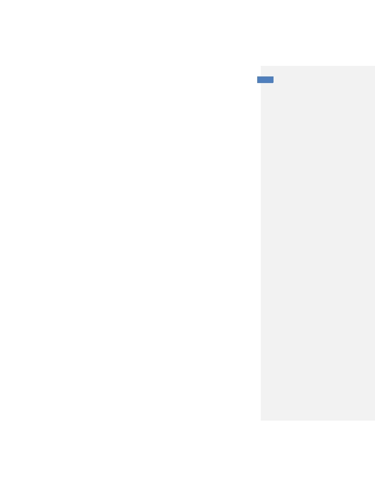
PARAGRAAF 4 – ONDERWIJS
15
art. 4.5 – evaluatie kwaliteit onderwijs
1. De opleidingsdirecteur is verantwoordelijk voor de bewaking van de kwaliteit van het onderwijs. Daartoe zorgt de
opleidingsdirecteur dat er evaluatie van onderdelen plaatsvindt en er evaluatie op het niveau van het curriculum
plaatsvindt. Bij de kwaliteitszorg onderwijs betrekt de opleidingsdirecteur de adviezen en verbetersuggesties van de
opleidingscommissie en de examencommissie over het bevorderen en waarborgen van de kwaliteit van de
opleiding.
2. De student kan gedurende de gehele cursus gevraagd en ongevraagd feedback geven over de cursus. Het onderwijs
in de opleiding wordt tevens op een of meerdere van de volgende wijzen geëvalueerd:
o tussentijdse evaluatie in de cursus: gedurende de cursus kunnen studenten feedback geven over zaken die
mogelijk anders of beter zouden kunnen;
o cursusevaluaties: aan het eind van de onderdelen wordt aan de deelnemende studenten een oordeel gevraagd
over de kwaliteit van de inhoud, didactische vormgeving, studiematerialen, toetsing en docent(en);
o evaluatie op het niveau van het curriculum;
3. door middel van de Nationale Studenten Enquête (NSE) wordt het oordeel van studenten gevraagd over alle
aspecten van het onderwijs en de voorzieningen.De studenten die hebben deelgenomen aan de cursus worden op
de hoogte gesteld van de uitkomsten van de cursusevaluatie.
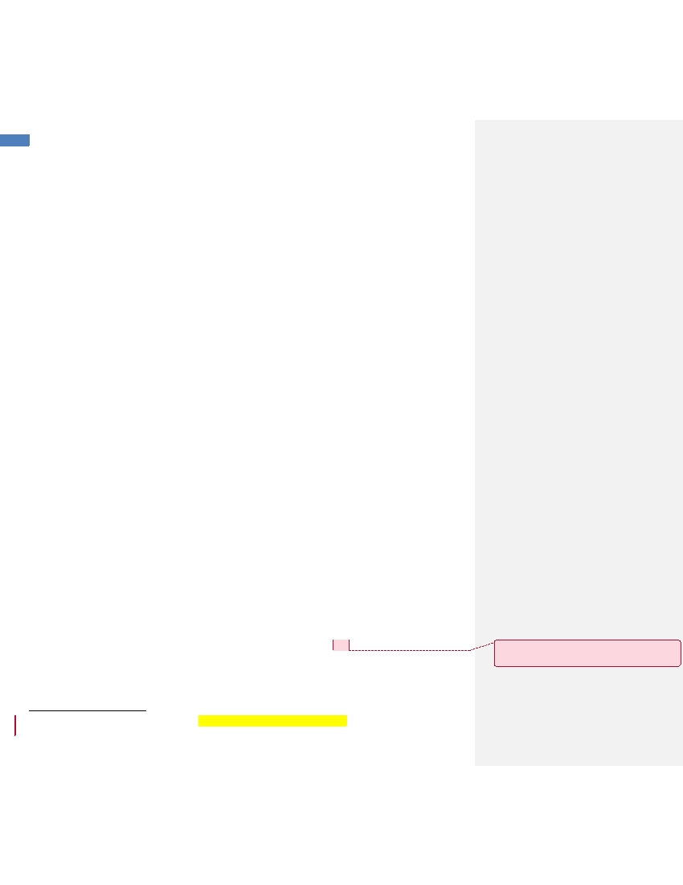
16
OER Graduate School of Natural Sciences 2021-2022
PARAGRAAF 5 – TOETSING
art. 5.1 – algemeen
1. Tijdens iedere cursus wordt de student op academische vorming getoetst en wordt getoetst of de student in
voldoende mate de gestelde leerdoelen bereikt.
2. In de Universitaire Onderwijscatalogus wordt verwezen naar of staat beschreven aan welke eisen de student moet
voldoen om de cursus met succes af te ronden en wat de criteria zijn waarop de student beoordeeld wordt.
3. In het Reglement van de examencommissie staat de gang van zaken bij toetsing beschreven.
art. 5.2 – examencommissie
1. De decaan stelt voor elke opleiding of groep van opleidingen een examencommissie in en draagt er zorg voor dat
het onafhankelijk en deskundig functioneren van de examencommissie voldoende wordt gewaarborgd.
2. De decaan benoemt de voorzitter en de leden van de examencommissie voor een termijn van drie jaar op basis van
hun deskundigheid op het terrein van de betreffende opleiding(en) of het terrein van toetsing, waarbij
- ten minste één lid afkomstig is van buiten de desbetreffende (groep van) opleiding(en), en
- ten minste één lid als docent verbonden is aan de desbetreffende (groep van) opleiding(en).
Herbenoeming is mogelijk. Alvorens tot benoeming over te gaan, hoort de decaan de leden van de desbetreffende
examencommissie.
3. Als lid of voorzitter van de examencommissie kan niet benoemd worden diegene die een managementfunctie met
financiële verantwoordelijkheid bekleedt of bestuurlijke (deel)verantwoordelijkheid voor een onderwijsprogramma
heeft. Hieronder worden in ieder geval verstaan: de decaan, vicedecaan, directeur/hoofd/manager van een
departement, lid van een departementaal management/bestuursteam, directeur/hoofd/manager van een afdeling,
lid van een afdelings-management/bestuursteam, lid/voorzitter van de board of studies van de Graduate School of
Undergraduate School, programmaleider, opleidingsdirecteur en de portefeuillehouder onderwijs.
4. Het lidmaatschap van de examencommissie eindigt bij het verstrijken van de benoemingstermijn. Voorts wordt aan
de voorzitter en de leden door de decaan op eigen verzoek ontslag verleend. De voorzitter en de leden worden door
de decaan ontslagen, indien zij niet meer voldoen aan de vereisten genoemd in lid 2 of lid 3 van dit artikel. Voorts
kan de decaan de voorzitter en de leden ontslaan indien is gebleken dat zij de wettelijke taken onvoldoende
uitvoeren.
5. De decaan maakt de samenstelling van de examencommissie(s) aan de studenten en docenten bekend.
art. 5.3 – toetsing stage of onderzoeksopdracht
1. De toetsing van een stage of van een onderzoeksopdracht wordt verricht door de desbetreffende begeleider /
docent van de UU en één of meer andere interne en/of externe deskundigen.
2. Bij de beoordeling van een thesis project zijn ten minste twee docenten van de UU 3 betrokken. Dit geldt ook voor
Commented [HG(5]: Comment BoS to EC: would it be a
rational thing to include PhD students in this footnote? Any reason
een onderzoeksopdracht die in twee onderdelen is gesplitst als vermeld in art.3.6 lid 2. Op de onderzoeksopdracht is
why they are not?
het protocol uitloop afstuderen van toepassing, dat als bijlage in deze OER is opgenomen.
3 In de context van dit lid wordt hieronder verstaan: een junior docent, docent, hoofddocent of hoogleraar.
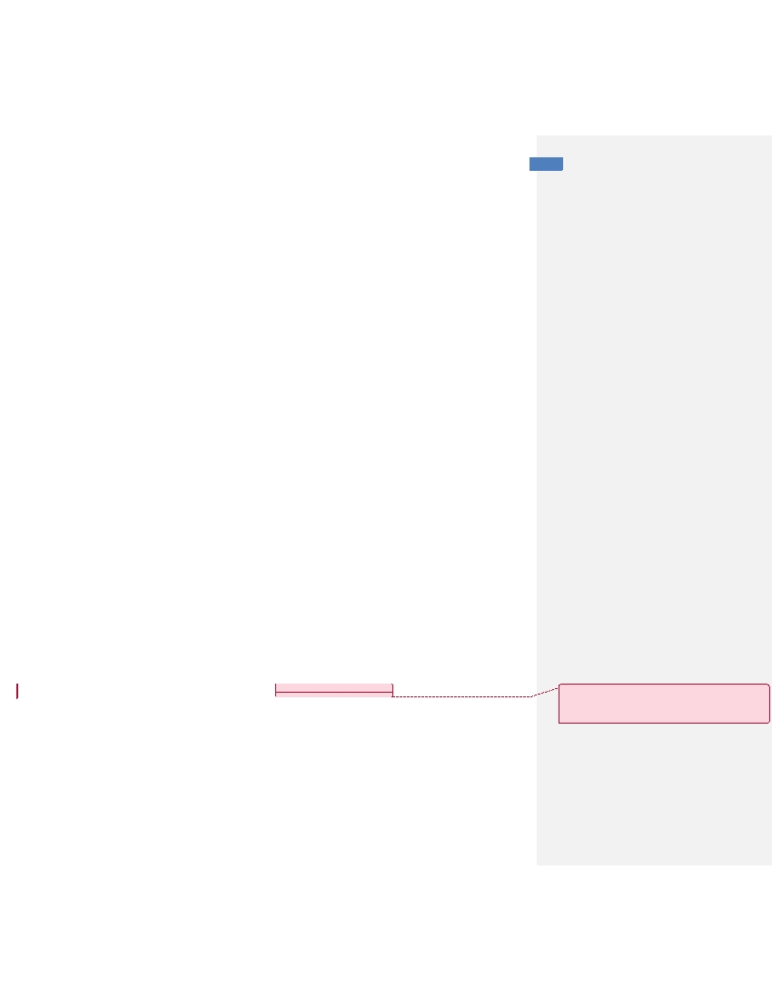
PARAGRAAF 5 – TOETSING
17
art. 5.4 – cijfers
1. Cijfers worden gegeven op een schaal van 1 tot en met 10. De eindbeoordeling van een cursus is voldoende dan
wel onvoldoende, waarbij:
-kleiner dan of gelijk aan een 5 en groter dan of gelijk aan 6 worden met maximaal 1 cijfer achter de komma
uitgedrukt.
-tussen 5 en 6 worden zonder cijfer achter de komma afgerond.
-als de beoordeling wordt bepaald als gewogen gemiddelde van deelresultaten, dan worden die deelresultaten niet
afgerond.
-een 5 of lager geldt als onvoldoende en een 6 of hoger voldoende is.
2. Alfanumerieke resultaten worden in onderstaande gevallen toegekend:
- de student die staat ingeschreven voor een cursus en aan geen enkel toetsonderdeel heeft deelgenomen,
ontvangt een ND (Niet Deelgenomen);
- de student die niet aan alle toetsonderdelen heeft deelgenomen, ontvangt een NVD (Niet VolDaan);
- indien de student heeft voldaan aan een onderdeel, maar hier geen cijfer voor ontvangt, kan de student een V
(Voldoende) als resultaat worden toegekend;
- indien de student niet heeft voldaan aan een onderdeel, maar hier geen cijfer voor ontvangt, kan de student een
ONV (ONVoldoende) als resultaat worden toegekend;
- in plaats van een NVD of ONV kan aan de student die aan alle inspanningsverplichtingen van een onderdeel
heeft voldaan eenmalig een AANV (AANVullende toets) toegekend;
- de AANV kan ook worden toegekend in het geval geen cijfermatige beoordeling kan worden vastgesteld, maar
de student volgens de beoordelingsnormen van de cursus recht heeft op een aanvullende of vervangende toets,
of bij besluit van de examencommissie;
- de student aan wie vrijstelling is verleend door de examencommissie ontvangt een VR (VRijstelling);
art. 5.5 – reparatie: aanvullende of vervangende toets
1. Indien studenten aan alle inspanningsverplichtingen tijdens de cursus hebben voldaan worden zij uitsluitend bij een
onvoldoende eindbeoordeling van ten minste een vier of de eindbeoordeling AANV, eenmaal in de gelegenheid
Commented [HG(6]: BoS to OC: there seems to be a conflict
between this change in red text and the GSNS green text in 5.4.2
gesteld een aanvullende of een vervangende toets af te leggen.
above. Can the OC look into this and figure out the motivation for
this change and a solution for the green text?
2. Studenten komen niet in aanmerking voor aanvullende of vervangende toetsing indien een voldoende is toegekend.
art. 5.6 – toetsvorm
1. Toetsing binnen een cursus vindt plaats op de wijze als vermeld in of verwezen door de Universitaire
Onderwijscatalogus.
2. Op verzoek kan de examencommissie toestaan dat een toets op een andere wijze dan krachtens het eerste lid is
bepaald, wordt afgelegd.
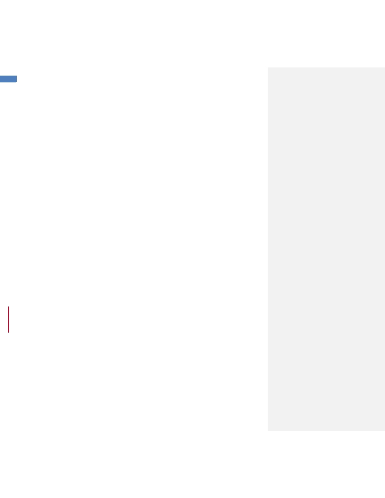
18
OER Graduate School of Natural Sciences 2021-2022
art. 5.7 – mondelinge toetsen
1. Mondeling wordt niet meer dan één persoon tegelijk getoetst, tenzij de examencommissie anders heeft bepaald.
2. Het mondeling afnemen van een toets is openbaar, tenzij de examencommissie of de desbetreffende examinator in
een bijzonder geval anders heeft bepaald, dan wel de student daartegen bezwaar heeft gemaakt.
3. Het is de student te allen tijde toegestaan om de examencommissie om toestemming te vragen om een
vertrouwenspersoon mee te nemen naar de mondelinge toets.
art. 5.8 – toetsvoorziening bijzondere gevallen
1. Indien het niet verlenen van een individuele of collectieve toetsvoorziening zou leiden tot een bijzonder geval van
onbillijkheid van overwegende aard kan de examencommissie besluiten een toetsvoorziening toe te kennen.
2. Verzoeken om een bijzondere toetsvoorziening moeten zo snel mogelijk met bewijsstukken schriftelijk worden
ingediend bij de examencommissie.
3. Artikel 5.5 is van overeenkomstige toepassing op de individuele toetsvoorziening bedoeld in het eerste lid. Dat
betekent dat de student die:
- door overmacht de reguliere eindtoets van de cursus heeft gemist, en
- bij wijze van bijzondere toetsvoorziening alsnog de toets aflegt,
in de gelegenheid wordt gesteld een aanvullende of een vervangende toets af te leggen bij een onvoldoende
eindbeoordeling van ten minste een vier.
art. 5.9 – termijn beoordeling
1. De examinator stelt direct of uiterlijk binnen 24 uur na het afnemen van een mondelinge toets het oordeel vast,
reikt de student een desbetreffende schriftelijke verklaring uit en verschaft (binnen dezelfde termijn) de
administratie van de faculteit de betreffende gegevens.
2. De examinator stelt het oordeel over een schriftelijk of op andere wijze afgenomen toets vast binnen 10 werkdagen
na de dag waarop deze is afgenomen en verschaft (binnen dezelfde termijn) de administratie van de faculteit de
nodige gegevens ten behoeve van de uitreiking van het schriftelijk of elektronisch bewijsstuk van het oordeel aan de
student.
3. Indien het oordeel door overmacht niet binnen deze termijn beschikbaar is, dient de examinator dit te
communiceren naar de student. Hierbij dient een indicatie gegeven te worden van het moment waarop het oordeel
zal worden vastgesteld. Overmacht kan slechts worden vastgesteld in overleg met de examencommissie.
4. Op de elektronische verklaring van het oordeel over een toets wordt de student gewezen op het inzagerecht,
bedoeld in art. 5.11 en op de beroepsmogelijkheid bij het College van Beroep voor de Examens.
art. 5.10 – geldigheidsduur
1. De geldigheidsduur van behaalde cursussen is onbeperkt. In afwijking hiervan kan de examencommissie voor een
cursus, waarvan de toets langer dan vijf jaar geleden is behaald, een aanvullende dan wel een vervangende toets
opleggen indien de getoetste kennis of het getoetste inzicht aantoonbaar verouderd is, of indien de getoetste
vaardigheden aantoonbaar verouderd zijn.
2. De periode van vijf jaar bedoeld in het eerste lid wordt verlengd met het aantal maanden financiële ondersteuning
dat de student toegekend heeft gekregen op grond van het profileringsfonds als bedoeld in paragraaf 2a WHW en
de toegekende periode van verlenging prestatiebeurs vanwege handicap of chronische ziekte.
PARAGRAAF 5 – TOETSING
19
3. Deeltoetsen en opdrachten die behaald zijn vervallen indien het onderdeel waarbinnen deze zijn behaald niet met
goed gevolg is afgelegd, tenzij de cursuscoördinator expliciet anders besluit.
art. 5.11 – inzagerecht
1. Gedurende ten minste twintig werkdagen na de bekendmaking van de uitslag van een schriftelijke toets krijgt de
student op verzoek inzage in het beoordeeld werk. Daarbij kan de student zelf een digitale kopie van dat werk
maken.
2. Gedurende de in het eerste lid genoemde termijn kan elke belanghebbende kennis nemen van vragen en
opdrachten van de desbetreffende toets, alsmede van de normen aan de hand waarvan de beoordeling heeft
plaatsgevonden. Een digitale kopie van multiple-choice vragen/opdrachten mag alleen met toestemming van de
examinator worden gemaakt.
art. 5.12 – bewaartermijn toetsen
De opgaven en antwoordmodellen van toetsen alsmede de schriftelijke producten (zoals scripties en theses) van
onderzoeksopdrachten van 30 studiepunten of meer worden gedurende zeven jaar bewaard, in papieren of digitale
vorm. Het overige beoordeelde werk wordt gedurende twee jaar na de beoordeling bewaard, in papieren of digitale
vorm.
art. 5.13 – vrijstelling en credit transfer
1. De examencommissie kan de student op diens verzoek, gehoord de desbetreffende examinator, vrijstelling verlenen
van een onderdeel, indien de student:
a. hetzij een qua inhoud en niveau overeenkomstig onderdeel van een universitaire of hogere beroepsopleiding
heeft voltooid;
b. hetzij aantoont door werk- c.q. beroepservaring over voldoende kennis en vaardigheden te beschikken m.b.t.
het desbetreffende onderdeel.
2. Onderdelen waarvoor vrijstelling wordt verleend dienen te worden vervangen door keuzeonderdelen met een
overeenkomstige studielast. In uitzondering hierop kan de examencommissie besluiten dat onderdelen met een
maximale omvang van 16 studiepunten per student per programma niet hoeven te worden vervangen. Ook bij
credit transfer op grond van lid 3 en 4 van dit artikel kan de examencommissie besluiten dat onderdelen niet te
hoeven worden vervangen; in dat geval is geen maximum aantal studiepunten van toepassing.
3. Credit transfer (1): Op verzoek van een student kan de examencommissie onderdelen die elders gedurende de
inschrijving tot het programma zijn behaald aan een instelling voor hoger onderwijs, bijvoorbeeld in het kader van
een uitwisselingssemester, laten bijdragen aan het voldoen van de exameneisen van het programma. De
examencommissie beslist over het te vermelden resultaat en de daarbij behorende studielast. In die gevallen
waarbij het omzetten van het resultaat elders naar de norm aan de Universiteit Utrecht niet eenduidig is, zal de
examencommissie in het algemeen als resultaat ‘voldoende’ vermelden, met inachtneming van art. 3.7 en 3.8.
4. Credit transfer (2): Op verzoek van een student kan de examencommissie onderdelen die gedurende de inschrijving
tot een ander masterprogramma zijn behaald, maar niet zijn opgevoerd voor een diploma, laten bijdragen aan het
voldoen van de exameneisen van een programma als genoemd in art. 1.1 waartoe de student is toegelaten. De
examencommissie beslist over het te vermelden resultaat en de daarbij behorende studielast.
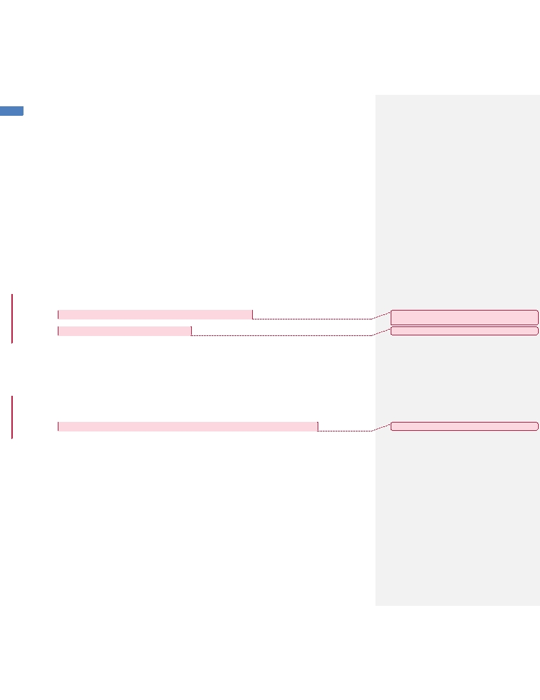
20
OER Graduate School of Natural Sciences 2021-2022
5. Twin- honoursprogramma: Op verzoek van een student kan de examencommissie vrijstelling verlenen voor het
research project- onderdeel van een programma zonder dat de student een vervangende invulling aan dit onderdeel
hoeft te geven. Noodzakelijke voorwaarden hierbij waarbij de student aan alle voorwaarden moet voldoen:
a. De student is toegelaten tot een twin- honoursprogramma (zie art. 3.8) en voldoet aan alle overige voorwaarden
om het getuigschrift als bedoeld in art. 6.4 te ontvangen;
b. De student is ingeschreven voor beide masterprogramma’s die samen het twin- honoursprogramma vormen en
voldoet aan alle overige voorwaarden om voor beide programma’s tegelijkertijd de getuigschriften als bedoeld
in art. 6.5 te ontvangen;
c. De vrijstelling wordt slechts in een van beide masterprogramma’s verleend;
d. De student heeft i.h.k.v. het andere masterprogramma een research project afgerond dat recht doet aan de
thematiek van beide masterprogramma’s, vanuit beide masterprogramma’s is begeleid en vanuit beide
masterprogramma’s als voldoende is beoordeeld.
art. 5.14 – fraude en plagiaat
1. Onder fraude en plagiaat wordt verstaan het handelen of nalaten van studenten waardoor een juist oordeel
over hun kennis, inzicht en vaardigheden geheel of gedeeltelijk onmogelijk wordt.
Onder fraude valt onder meer:
-
tijdens de toets spieken. Degene die gelegenheid biedt tot spieken is medeplichtig aan fraude;
-
antwoorden met anderen delen tijdens het afleggen van een toets;
Commented [HG(7]: Added based on Model MasterOER 2021-
2022
-
de hulp van derden inroepen tijdens een toets
Commented [HG(8]: Idem.
-
tijdens de toets gebruik maken van hulpmiddelen (voorgeprogrammeerde rekenmachine, mobiele telefoon,
smartwatch, smartglasses, boeken, syllabi, aantekeningen etc.), waarvan de raadpleging niet uitdrukkelijk is
toegestaan;
-
door anderen laten maken van (delen van) een studieopdracht en het voordoen als eigen werk;
-
zich voor de datum of het tijdstip waarop de toets zal plaatsvinden, in het bezit te stellen van de vragen,
opgaven of antwoorden van de desbetreffende toets;
-
technische wijzigingen uit (proberen) te voeren, die het online toetssysteem ondermijnen;
Commented [HG(9]: Idem.
-
fingeren van enquête- of interviewantwoorden of onderzoekgegevens;
-
het onterecht (laten) aftekenen van presentielijsten.
Van plagiaat is sprake bij het in een scriptie of ander werkstuk gegevens of tekstgedeelten van anderen of uit
eigen werk overnemen zonder bronvermelding. Onder plagiaat valt onder meer:
-
het knippen en plakken van tekst van digitale bronnen zoals encyclopedieën en digitale tijdschriften zonder
aanhalingstekens of verwijzing;
-
het knippen en plakken van teksten van het internet zonder aanhalingstekens en verwijzing;
-
het overnemen van teksten van gedrukt materiaal zoals boeken, tijdschriften en encyclopedieën zonder
aanhalingstekens of verwijzing;
-
het opnemen van een vertaling van bovengenoemde bronnen zonder aanhalingstekens en verwijzing;
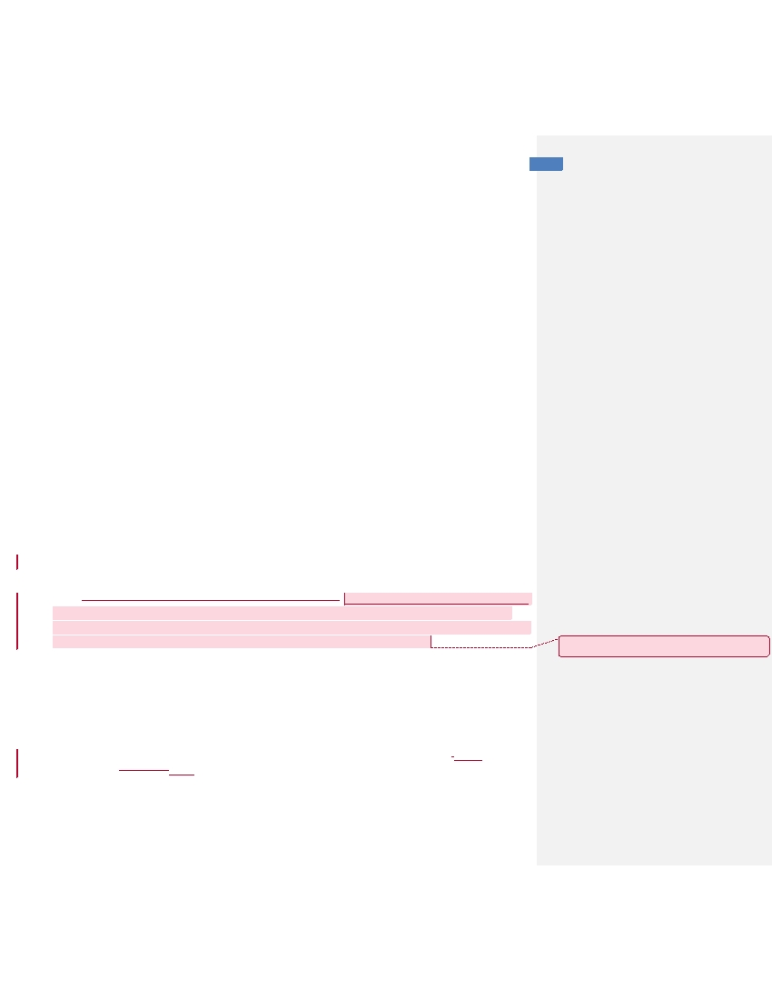
PARAGRAAF 5 – TOETSING
21
-
het parafraseren van bovengenoemde teksten zonder (deugdelijke) verwijzing; parafrasen moeten als
zodanig gemarkeerd zijn (door de tekst uitdrukkelijk te verbinden met de oorspronkelijke auteur in tekst of
noot), zodat niet de indruk wordt gewekt dat het gaat om eigen gedachtegoed van de student;
-
het overnemen van beeld-, geluids- of testmateriaal van anderen zonder verwijzing en zodoende laten
doorgaan voor eigen werk;
-
het zonder bronvermelding opnieuw inleveren van eerder door de student gemaakt eigen werk en dit laten
doorgaan voor in het kader van de cursus vervaardigd oorspronkelijk werk, tenzij dit in de cursus of door de
docent uitdrukkelijk is toegestaan;
-
het overnemen van werk van andere studenten en dit laten doorgaan voor eigen werk. Indien dit gebeurt
met toestemming van de andere student is de laatste medeplichtig aan plagiaat;
-
ook wanneer in een gezamenlijk werkstuk door een van de auteurs plagiaat wordt gepleegd, zijn de andere
auteurs medeplichtig aan plagiaat, indien zij hadden kunnen of moeten weten dat de ander plagiaat
pleegde;
-
het indienen van werkstukken die verworven zijn van een commerciële instelling (zoals een internetsite met
uittreksels of papers) of die al dan niet tegen betaling door iemand anders zijn geschreven.
2.
a. Wanneer fraude of plagiaat wordt geconstateerd of vermoed, deelt de examinator dit schriftelijk mee aan de
student, de examencommissie en de programmaleider.
b. De examencommissie stelt de student in de gelegenheid om schriftelijk daarop te reageren en te worden
gehoord.
3.
De examencommissie stelt vast of er sprake is van fraude of plagiaat en deelt de examinandus schriftelijk haar
besluit en de eventuele sancties conform het bepaalde in het vierde lid mede, onder vermelding van de
beroepsmogelijkheid bij het College van Beroep voor de Examens.
4.
Fraude en plagiaat wordt door de examencommissie als volgt bestraft: De examencommissie is bevoegd sancties op
te leggen. Daarbij draagt de examencommissie er zorg voor dat de sanctie proportioneel is: de gevolgen van de
sanctie staan in evenredige verhouding tot de mate en ernst van de gepleegde fraude of het gepleegde plagiaat. Als
leidraad bij het opleggen van sancties geldt dat fraude en plagiaat als volgt worden bestraft:
Commented [HG(10]: Added based on Model MasterOER
2021-2022
a. In ieder geval:
- ongeldig verklaren van het ingeleverde werkstuk of de toets
- berisping, die aangetekend wordt in OSIRIS.
b. En eventueel daarna, afhankelijk van aard en omvang van de fraude of plagiaat, en van de studiefase van de
student, één of meer van de volgende sancties:
- verwijderen uit de cursus
- het niet meer in aanmerking komen voor een positief judicium (cum laude) als bedoeld in art.6.2
- uitsluiting van deelname aan toetsen die behoren bij het betreffende onderwijsonderdeel cursus voor het
lopende academisch studiejaar, dan wel voor een periode van 12 maanden
- volledige uitsluiting van deelname aan alle toetsen voor een periode van 12 maanden.
c. Indien de student reeds eerder een berisping heeft gekregen:
volledige uitsluiting van deelname aan alle toetsen voor een periode van 12 maanden.
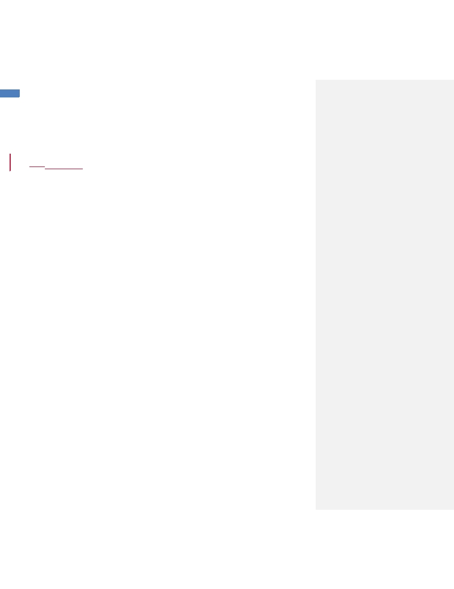
22
OER Graduate School of Natural Sciences 2021-2022
d. Bij zeer ernstige en/of herhaalde fraude of plagiaat kan de examencommissie het College van Bestuur
voorstellen de inschrijving voor de opleiding van de betrokkene definitief te beëindigen.
5. Als de examencommissie vaststelt dat er sprake is van grootschalige of georganiseerde fraude, welke van een
omvang is dat het de toetsresultaten in hun geheel zal beïnvloeden, beslist de examencommissie onverwijld dat het
desbetreffende toets ongeldig is en dat alle deelnemers op korte termijn de hele toets moeten overdoen. Daarbij
stelt de examencommissie de datum vast waarop de toets moet worden overgedaan. Deze datum ligt uiterlijk twee
wekentien werkdagen na het vaststellen van de fraude, zodat de deelnemers nog baat hebben bij hun voorbereiding
voor de toets.
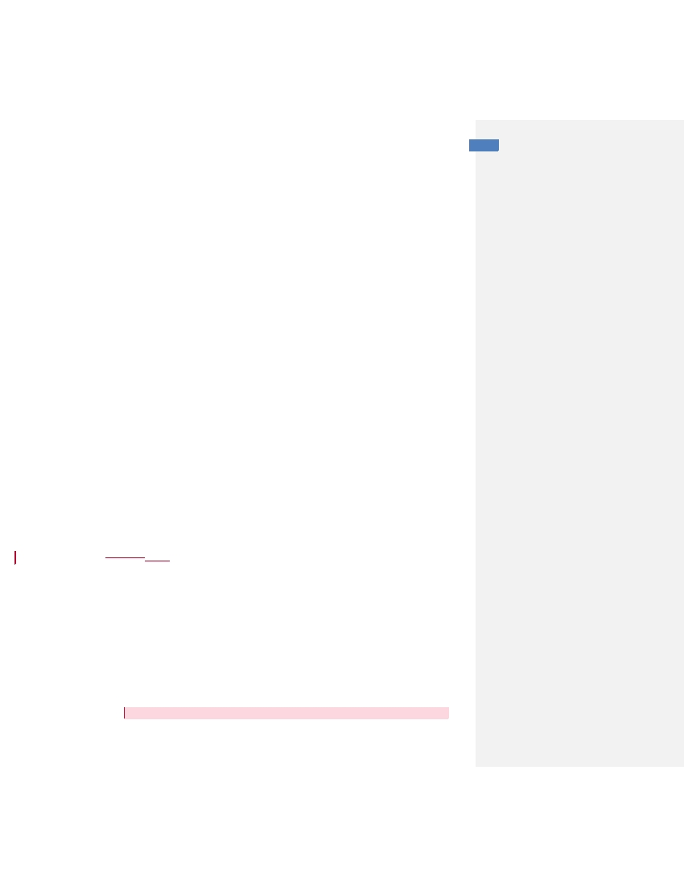
PARAGRAAF 6 – EXAMEN
23
PARAGRAAF 6 – EXAMEN
art. 6.1 – examen
1. De examencommissie stelt de uitslag van het examen vast en reikt het getuigschrift als bedoeld in art. 6.4 uit zodra
de student aan de eisen van het examenprogramma heeft voldaan. Alvorens de uitslag van het examen vast te
stellen, kan de examencommissie zelf een onderzoek instellen naar de kennis van de student m.b.t. een of meer
onderdelen of aspecten van de opleiding, indien en voor zover de uitslagen van de desbetreffende toetsen haar
daartoe aanleiding geven.
2. Beoordeling van het examendossier maakt deel uit van het afsluitend examen. Als datum voor het examen geldt de
laatste werkdag van de maand waarin de examencommissie heeft vastgesteld dat de student aan de eisen van het
examenprogramma heeft voldaan.
3. Wanneer de in lid 2 bedoelde beoordeling positief uitvalt en plaatsvindt voor het laatste van toepassing zijnde
toetsmoment, dan geldt -in uitzondering op lid 2- als datum voor het examen de laatste werkdag van de maand
waarin het laatste toetsmoment ligt.
4. Voor het behalen van het examen geldt als voorwaarde dat voor alle onderdelen die voor het examen worden
voorgedragen een voldoende is behaald.
5. Voor het behalen van het examen en de afgifte van het getuigschrift geldt tevens als voorwaarde dat de student
ingeschreven was voor de opleiding in de periode dat de toetsen en het examen zijn afgelegd. Als de student niet
aan deze voorwaarde voldoet, kan het College van Bestuur een verklaring van geen bezwaar afgeven met betrekking
tot het behalen van het examen en de afgifte van het getuigschrift nadat de student de verschuldigde collegegelden
en administratiekosten voor de 'ontbrekende' perioden heeft betaald.
6. Degene die het examen met goed gevolg heeft afgelegd en aanspraak heeft op uitreiking van een getuigschrift, kan
de examencommissie verzoeken daartoe nog niet over te gaan en de examendatum als bedoeld in het tweede lid uit
te stellen. Dit verzoek moet worden ingediend binnen tien werkdagen nadat studenten op de hoogte zijn gebracht
van de uitslag van het examen. Bij dit verzoek geven studenten aan wanneer zij het getuigschrift willen ontvangen.
De examencommissie willigt het verzoek in het studiejaar 2020-2021 in ieder geval in wanneer de student:
- een bestuursfunctie gaat vervullen waarvoor een bestuursbeurs van de Universiteit Utrecht beschikbaar is
- een stage of onderdeel cursus in het buitenland gaat volgen
Uitstellen van de examendatum is slechts eenmalig mogelijk voor de duur van maximaal 13 maanden.
art. 6.2 – judicium cum laude
Het judicium 'cum laude' wordt toegekend aan het masterexamen, indien voldaan is aan elk van de voorwaarden in lid 1
t/m 6:
1. voor de onderdelen, niet inbegrepen de onderzoeksopdracht zoals bedoeld in lid 3 van dit artikel, en niet
inbegrepen de onderdelen behaald aan een niet-Nederlandse universiteit, een naar studiepunten gewogen
gemiddelde van ten minste het cijfer 8,0 is behaald;
2. er is geen sprake van een aanvullende of vervangende toets, of het opnieuw volgen van een onderdeel.
Uitzondering hierop geldt voor studenten die voor 1 september 2018 waren ingeschreven voor de opleiding: zij
mogen maximaal één keer een aanvullende/vervangende toets hebben gedaan of een onderdeel opnieuw
hebben gevolgd. Het onderdeel Introducing Natural Sciences (INTRO-GSNS) moet gedurende het eerste
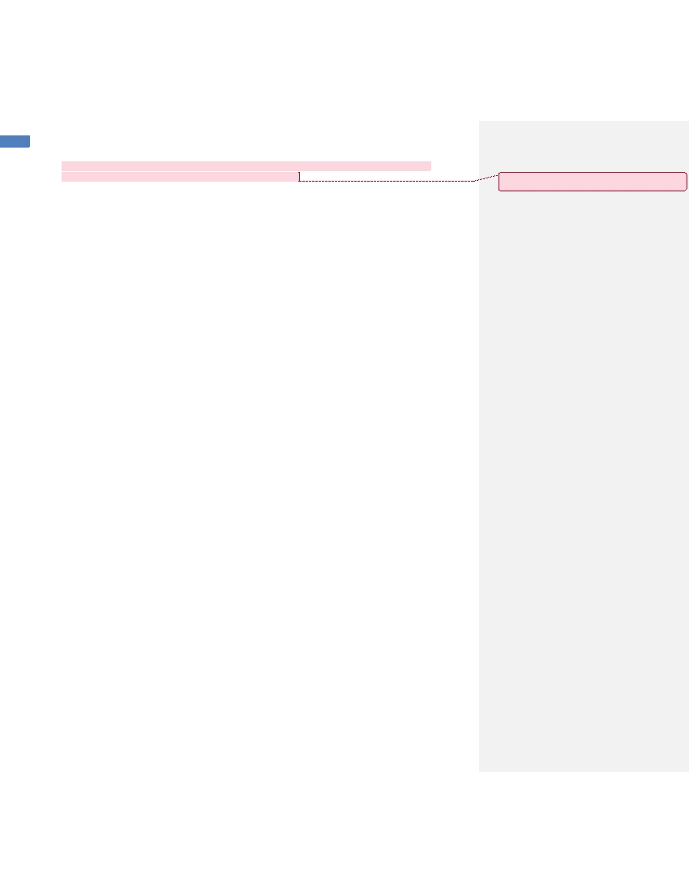
24
OER Graduate School of Natural Sciences 2021-2022
inschrijvingsjaar behaald zijn. (Het opnieuw volgen van Introducing Natural Sciences in het eerste
inschrijvingsjaar heeft dus geen gevolgen voor een cum laude.)
Commented [HG(11]: BoS advice: take out the phrasing about
3.
the exception.
a) alleen voor studenten die vóór 1 september 2018 zijn ingeschreven:
er voor een onderzoeksopdracht ten minste het cijfer 8,5 is behaald. In het geval er meerdere
onderzoeksopdrachten zijn gedaan, dan is dit lid van toepassing op de grootste opdracht. Als de
onderzoeksopdracht gesplitst is in de zin van art.3.6 lid 2 en beide onderdelen cijfermatig worden beoordeeld,
dan is dit lid van toepassing op het naar studiepunten gewogen gemiddelde van beide onderdelen.
b) alleen voor studenten die op of na 1 september 2018 zijn ingeschreven:
er voor het afsluitende gedeelte van het research project een cijfer groter of gelijk aan een vastgesteld
minimum is behaald. De juiste cursuscode en de hoogte van het minimumcijfer wordt vermeld in de
betreffende programmabijlage.
4. voor maximaal 16 studiepunten (waarbij de vrijstellingen i.h.k.v. art. 5.13 lid 5 niet worden meegeteld)
vrijstellingen zijn verkregen, tenzij de examencommissie anders beslist;
5. er is geen beslissing van de examencommissie (als bedoeld in art. 5.14, lid 4 onder b) inhoudend dat er vanwege
vastgestelde fraude/plagiaat de student niet meer in aanmerking komt voor een positief judicium (cum laude);
6. het masterexamen is behaald binnen 1,5x de nominale studieduur
7. in uitzonderlijke gevallen waarbij het niet verlenen van het judicium cum laude leidt tot een kennelijk
onredelijke uitkomst en de student bijna aan alle criteria in dit artikel voldoet kan de Examencommissie
besluiten het judicium alsnog toe te kennen.
art. 6.3 – graad
1. Aan degene die het examen met goed gevolg heeft afgelegd, wordt de graad “Master of Science” verleend.
2. De verleende graad wordt op het getuigschrift van het examen aangetekend.
art. 6.4 – getuigschrift en Internationaal Diploma Supplement
1. Als bewijs van het met goed gevolg afleggen van het examen wordt door de examencommissie een getuigschrift
uitgereikt. Toetsresultaten beneden de 6 verschijnen niet op het getuigschrift. Per opleiding wordt één getuigschrift
uitgereikt, ook al rondt een student meerdere programma’s af.
2. De examencommissie voegt aan dit getuigschrift het Engelstalige Internationaal Diploma Supplement toe, waarmee
(internationaal) inzicht wordt verschaft in de aard en inhoud van de afgeronde opleiding.
art. 6.5 – honours
Indien een honoursprogramma als bedoeld in art. 3.9, lid 1a en 1b, met goed gevolg is afgesloten, wordt een afzonderlijk
getuigschrift uitgereikt waarop dit is vermeld.
art. 6.6 – Grading Tables
Op het Internationaal Diploma Supplement is het gewogen gemiddelde eindcijfer van de student en een EC Grading
Table vermeld. Hiermee wordt inzichtelijk gemaakt hoe de student heeft gepresteerd in vergelijking met
medestudenten. Op deze wijze kan de afgestudeerde student voor buitenlandse onderwijsinstellingen en buitenlandse
werkgevers de waarde van de Nederlandse cijfers inzichtelijk maken.
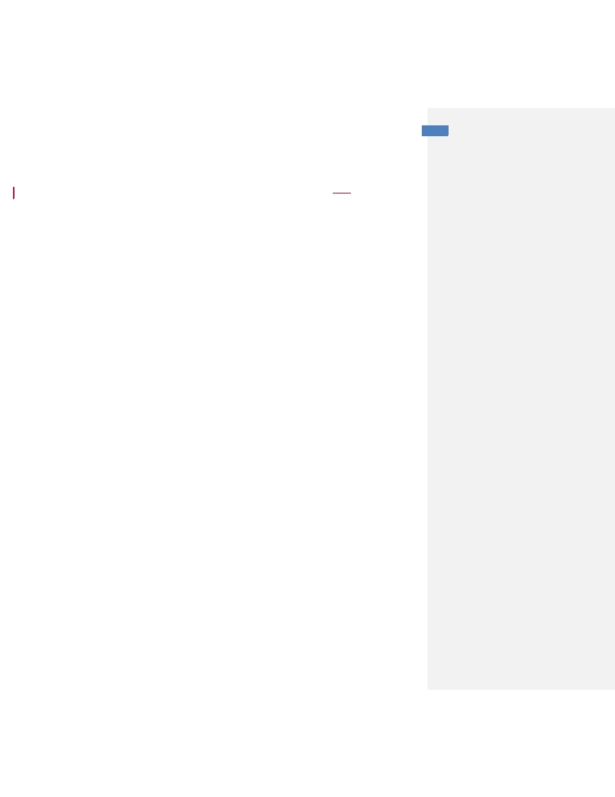
PARAGRAAF 7 – STUDIEBEGELEIDING
25
PARAGRAAF 7 – STUDIEBEGELEIDING
art. 7.1 – studievoortgangsadministratie
1. De faculteit registreert de individuele studieresultaten van de studenten en stelt deze via OsirisOSIRIS-student ter
beschikking.
2. Door de afdeling Onderwijs- en Studentenzaken kan op verzoek van de student een gewaarmerkt
studievoortgangsdossier worden afgegeven.
art. 7.2 – studiebegeleiding
1. De faculteit draagt zorg voor de studiebegeleiding van de studenten die voor de opleiding zijn ingeschreven.
2. De studiebegeleiding omvat:
- toewijzing van een studiebegeleider die zorg draagt voor:
i. het bevorderen van het community-gevoel van studenten;
ii. begeleiding bij keuzes in het programma;
iii. begeleiding bij de oriëntatie op de arbeidsmarkt.
- het bieden van verwijzing en hulp bij door studenten ervaren moeilijkheden tijdens de studie.
art. 7.3 – handicap en chronische ziekte
Aan studenten met een handicap of chronische ziekte wordt de gelegenheid geboden het onderwijs te volgen en de
toetsen af te leggen op de wijze zoals vastgelegd in hun contract onderwijsvoorzieningen. Verzoeken om een
studiecontract af te sluiten worden ingediend bij de studieadviseur.
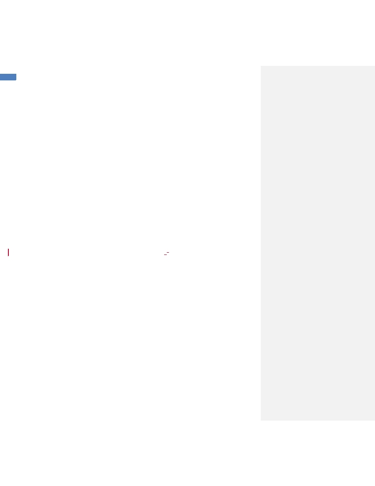
26
OER Graduate School of Natural Sciences 2021-2022
PARAGRAAF 8 – OVERGANGS- EN SLOTBEPALINGEN
art. 8.1 – vangnetregeling
In die gevallen waarin deze regeling niet voorziet, niet duidelijk voorziet of tot kennelijk onredelijke uitkomsten leidt,
wordt door of namens de decaan beslist, na de examencommissie te hebben gehoord. Indien de beslissing, op basis van
de wet, behoort tot de bevoegdheden van de examencommissie, stuurt de decaan het verzoek naar de
examencommissie ter afhandeling.
Als er een (interpretatie)verschil is tussen de Nederlandstalige en Engelstalige versie van deze onderwijs- en
examenregeling, dan prevaleert de Nederlandstalige versie.
art. 8.2 – wijziging van de OER
1. Wijzigingen van deze onderwijs- en examenregeling worden door de decaan, na overleg met de
opleidingscommissie en faculteitsraad of opleidingsraad, bij afzonderlijk besluit vastgesteld.
2. Een wijziging van deze regeling heeft geen betrekking op het lopende studiejaar, tenzij de belangen van de
studenten daardoor redelijkerwijs niet worden geschaad.
3. Een wijziging kan voorts niet ten nadele van studenten van invloed zijn op enige andere beslissing, die krachtens
deze regeling door de examencommissie is genomen ten aanzien van een student.
art. 8.3 – bekendmaking
De decaan draagt zorg voor bekendmaking van deze regeling, alsmede van elke wijziging.
art. 8.4 – inwerkingtreding
Deze onderwijs- en examenregeling treedt in werking op 1 september 20210, en vervangt de onderwijs- en
examenregeling van het academisch jaar 2020-2021.
o – o – o
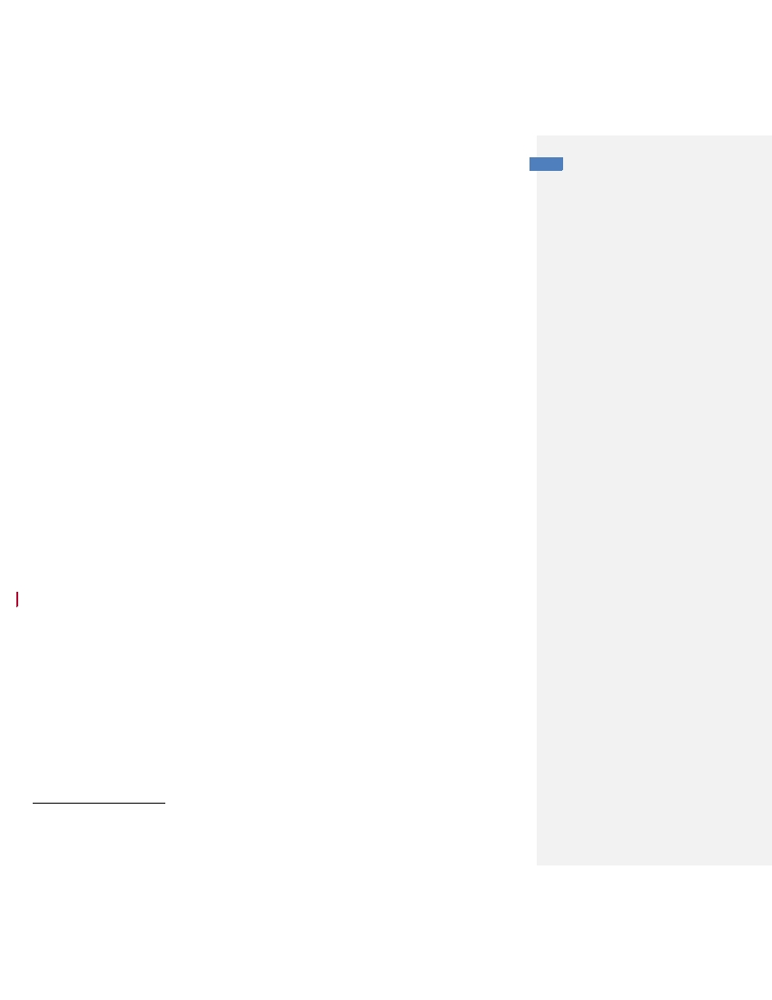
Bijlage 1: Protocol uitloop afstuderen
27
Bijlage 1: Protocol uitloop afstuderen
Dit protocol beschrijft de handelwijze in het geval de geplande einddatum van een research project niet gehaald wordt,
of verlenging/aanvulling van het project noodzakelijk is.
Dit protocol treedt in werking op 1 september 2020. Studenten die op dat moment al bezig zijn met een research project
en menen benadeeld te zijn door de wijzigingen kunnen zich beroepen op een eerdere versie van dit protocol.
1) Er wordt strikt vastgehouden aan de (voor aanvang van het project) in het ‘application form’ of in OSIRIS-zaak
vastgelegde einddatum. De einddatum is de datum waarop uiterlijk de beoordeling wordt vastgesteld. De
einddatum is gebaseerd op voltijdsstudie. Als op de einddatum redelijkerwijs een beoordeling mogelijk is, dan wordt
deze ook uitgevoerd en de uitslag vastgelegd.
2) Als op de einddatum een onvoldoende beoordeling wordt vastgesteld en
de student recht heeft op een aanvullende toets 4 ,
dan wel er naar de mening van de eerste examinator een gegronde reden is om te verlengen,
dan ontvangt de student de uitslag AANV en kan de looptijd van (dat deel van) het project eenmalig met maximaal
1/3 van de nominale looptijd worden verlengd. NB Uitloop vanwege bijvoorbeeld het afronden van een op stapel
staande publicatie is geen gegronde reden. Projecten die een numerieke beoordeling krijgen kunnen na verlenging
met maximaal een 8 worden beoordeeld. Als een research project uit twee delen bestaat en het eerste deel wordt
verlengd, schuiven de begin- en einddatum van het tweede deel overeenkomstig op.
3) Als er op de einddatum een onvoldoende beoordeling wordt vastgesteld en de student geen recht heeft op een
aanvullende toets en er verder geen gegronde reden voor verlenging is, dan wordt het project niet verlengd en kan
de student het onderdeel alleen afronden door het starten van een nieuw project.
4) Als de einddatum niet gehaald kan worden vanwege overmacht dan kan, op verzoek van de student, door de
examencommissie, indien nodig na een gesprek met en advies van de studieadviseur, de looptijd van (dat deel van)
het project worden verlengd met maximaal 1/3 van de nominale looptijd. Een dergelijke verlenging kan twee keer
worden verleend, daarna beslist de examencommissie over de mogelijke voortzetting van het project.
Bij toepassing van deze hardheidsclausule wordt de maximum termijn van drie jaar voor het behalen van een cum
laude-judicium niet strikt gehanteerd, maar hanteert de examencommissie een naar omstandigheden redelijke
termijn. De nieuwe einddatum moet in redelijke verhouding staan met de opgelopen vertraging en zo snel mogelijk
na de vertraging worden vastgesteld. Na goedkeuring van de examencommissie dient de examencommissie de
nieuwe einddatum door te geven aan het studiepunt.
5) Meningsverschillen worden voorgelegd aan de programmaleider. Als geen overeenstemming kan worden bereikt
dan besluit de examencommissie, naar de geest van dit protocol.
6) Deze regeling wordt door de Graduate School of Natural Sciences bekend gemaakt op de studentenwebsite en
opgenomen in de Onderwijs- en ExamenRegeling (OER).
4 Zoals bepaald in de OER, art.5.5. Dit houdt tenminste in dat de student aan al zijn inspanningsverplichtingen heeft voldaan.